Neurophysiology
Chapter 2 of 19Introduction
Mary is visiting the office of Dr. Alfredo Quinones-Hinojosa, a neuroscientist, physician, and neurosurgeon who is known affectionately by his patients as “Dr. Q”. Unfortunately, it is not a happy visit—Mary has been diagnosed with a glioma, a tumor caused by runaway cell division among the glial cells in her brain. Her first sign that something was wrong was a seizure, an episode of tremoring and muscle rigidity that left Mary exhausted and frightened. Now brain scans have revealed a glioma.
Mary is worried. Dr. Q patiently walks her through her prognosis, explaining how his team can conduct surgery to remove the glioma. “Will that stop the seizures?” Mary asks. “Maybe” says Dr. Q. But he warns that in almost 30% of cases, seizures persist even after a glioma is removed. How can that be? Why would a tumor cause seizures in the first place? And if the tumor is removed, shouldn’t the seizures go away? These are some of the medical mysteries Dr. Q’s research team is trying to solve. In fact, Mary decides to donate tissue from her removed tumor to be studied, and with that tissue and samples from other patients Dr. Q’s team uncover something remarkable: compared to glioma patients who do not suffer seizures, those with seizures show increased expression of the mRNA for a specific protein, VGLUT1 (Feyissa et al., 2021). VLGUT1 helps load the excitatory transmitter glutamate into vesicles to be released. This finding inspires Dr. Q’s team to formulate a new hypothesis: that excess VGLUT1 causes runaway excitation, explaining why some gliomas lead to seizures. This hypothesis may not make complete sense to you yet, but stay tuned: we’ll come back to it at the end of the chapter, and hopefully you’ll be right with Dr. Q’s team in understanding why this might be a breakthrough. What you can gain from this story for the moment is a glimpse into an important principle of neuroscience: The smooth functioning of neural circuits reflects an incredible ballet amongst protein machines working within each of our 86 billion neurons. The environment we live in can reshape which proteins are expressed and how, with profound implications for the functions of the brain.
In this chapter we’ll explore neural communication. We’ll see that neurons are constantly receiving messages from their partners and the outside world—messages that produce excitation, inhibition, or modulation. When a neuron is sufficiently excited, it generates an action potential—an electrical wave that spreads through the neuron, causing it to send its own chemical messages to all of its partners. In this way, neurons can form circuits, sending and integrating information to produce complex patterns of activity that muscles transform into behavior. How are neurons able to detect chemical signals, produce action potentials, and release transmitter? Through an amazing collection of protein machines: pumps that use energy to build up concentration gradients of electrically charged molecules, channels that monitor the neuron’s environment and then switch open or closed to generate electrical currents, and a whole complex of machinery for both releasing transmitter to partner neurons and for detecting transmitter released from partner neurons. Let’s dive in!
References
Feyissa A.M., Carrano A., Wang X., Allen M., Ertekin-Taner N., Dickson D.W., Jentoft M.E., Rosenfeld S.S., Tatum W.O., Ritaccio A.L., Guerrero-Cázares H., &Quiñones-Hinojosa A. (2021). Analysis of intraoperative human brain tissue transcriptome reveals putative risk genes and altered molecular pathways in glioma-related seizures. Epilepsy Research, 173, 106618. https://doi.org/10.1016/j.eplepsyres.2021.106618
Quiñones-Hinojosa, A. (2011). Becoming Dr. Q: My journey from migrant farm worker to brain surgeon. University of California Press.
2.1Neural Communication
By the end of this section, you should be able to
- Describe the chemical communication that occurs between neurons, at synapses.
- Describe the action potential, which moves information within a neuron.
- Explain how neurons both synthesize information (by integrating inputs from many partners) and filter information (by having a threshold).
The 86 billion neurons in your brain differ dramatically in size, shape, and gene expression (Herculano-Houzel, 2012). What they all have in common is a specialization for communication, allowing them to form complex networks. All day long, neurons chatter away in your nervous system. A typical neuron in your central nervous system is in direct communication with about 7,000 synaptic partners and can send up to 400 messages per second (Pakkenberg et al., 2003; Testa-Silva et al., 2014). The quantity and complexity of communication occurring in your nervous system is staggering.
How do neurons communicate? It turns out they are bilingual (see Neuronal languages)—speaking in both chemical and electrical languages. Neurons speak to each other in an ancient chemical language, releasing chemical signals called neurotransmitters. These chemical messages are translated into an internal electrical language that influences the generation of action potentials, electrical waves that spread within a neuron at great speed. As they spread, action potentials are translated back into chemical messages that are released to partner neurons. Let’s take a tour of these two signaling systems.
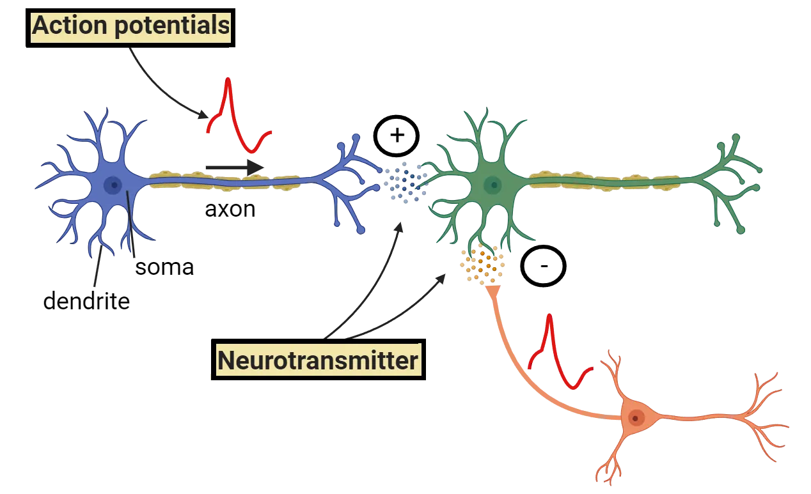
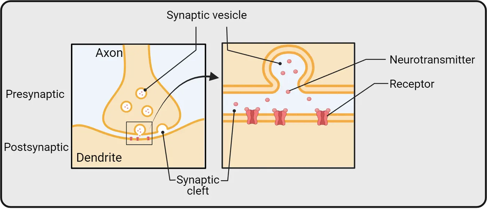
Communication between neurons happens chemically, at synapses
The chemical signaling that occurs between neurons happens primarily at chemical synapses (Chemical communication by neurons), specialized communication structures where a broadcasting neuron and a receiving neuron draw very close to one another, separated only by a small pocket of extracellular space called a synaptic cleft. One neuron releases transmitter into the synaptic cleft—we call this the pre-synaptic neuron and say that it contains the pre-synaptic terminal. The presynaptic terminal stores neurotransmitter in small membrane-bound bubbles called vesicles (Step 1 in Chemical communication by neurons). In response to an action potential within the neuron, these vesicles fuse with the pre-synaptic membrane and dump their neurotransmitter into the synaptic cleft (Step 2 in Chemical communication by neurons). The other neuron is studded with specialized receptors that recognize the transmitter and respond to it—we call this the post-synaptic neuron and say that it contains the post-synaptic terminal. There are many different neurotransmitters and many different transmitter receptors. Despite this complexity, each chemical message received is translated by receptors into one of just three responses in the post-synaptic neuron (Step 3 in Chemical communication by neurons):

- An Excitatory Post-Synaptic Potential (EPSP), a brief electrical change in the post-synaptic neuron that excites the neuron, pushing it towards firing an action potential.
- An Inhibitory Post-Synaptic Potential (IPSP), a brief electrical change in the post-synaptic neuron that inhibits the neuron, pushing it away from firing an action potential.
- Neuromodulation, a change in intracellular signaling in the post-synaptic neuron that modulates that neuron, changing its patterns of growth, connectivity, or signaling.
Almost as soon as it is released, neurotransmitter is broken down and recycled, inactivating the receptors on the post-synaptic membrane (Step 4 in Chemical communication by neurons). This ensures your synapses don’t clog up with accumulated neurotransmitter over time. More importantly, it tunes neural communication to the here and now, making their messages to one another extremely transient (short-lived). Each EPSP and IPSP lasts only a few milliseconds (bottom of Chemical communication by neurons). The one exception to this rule is modulation, which is usually short-lived, but which can also become long-lasting; more details on modulation are in Introduction.
The chemical communication that occurs between neurons is a specialization of systems that appeared very early in the history of life. Even bacteria can secrete chemicals and have receptors that stick through their membranes to detect and respond to chemicals in their environment. Many of the neurotransmitters and transmitter receptors used in your nervous system have long evolutionary histories, so it is not uncommon to find similar chemicals and proteins both in other forms of life and in other parts of your body. For example, histamine is an important neurotransmitter, but is also produced in white blood cells as part of an immune response to injury. This is part of the reason why substances in the natural world can influence your nervous system (caffeine!) and why drugs developed to treat brain disorders often have unwanted side effects in other parts of the body.
Although chemical communication between neurons has ancient roots, it has become highly specialized in neurons. One key specialization is that chemical communication is precisely targeted. Neurons release neurotransmitter almost exclusively at synapses. The tiny volume of the synaptic cleft ensures the post-synaptic neuron will get the message, and that other neurons (for the most part) will not. The pre-synaptic terminal also has specialized protein machinery to maintain a steady supply of neurotransmitter for release, and the post-synaptic terminal is loaded with receptors as well as other proteins that anchor the receptors and help fine-tune their responses to synaptic signals.
Although most communication between neurons occurs via chemical synapses, neurons can also signal to each other through electrical synapses (Electrical synapses); At an electrical synapse, neurons express a specialized protein, called connexon, which forms a protein bridge called a gap junction between the neurons. This enables electrical signals to pass directly from one neuron to another. In addition, small molecules can pass through an electrical synapse, so they actually allow for both electrical and chemical communication.
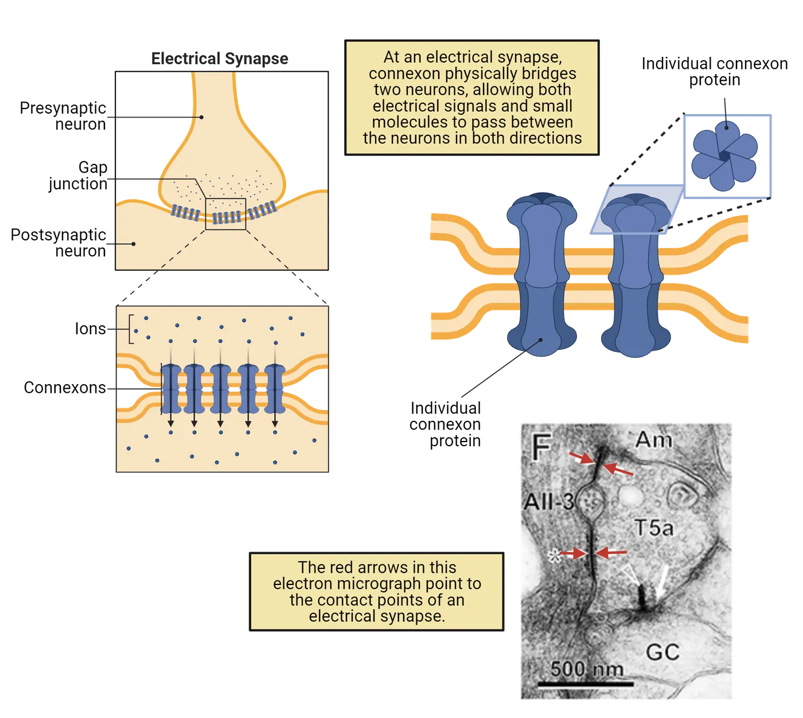
If you find communication between neurons fascinating, you’re not alone and you’re also in luck. When you get to Introduction, you’ll read more about chemical communication between neurons.
Information spreads within a neuron electrically
Neurons are specialized not only for communicating with each other, but also for generating internal electrical signals (Action potential spread and neurotransmitter release). Like almost all cells, neurons maintain an overall negative charge called a resting potential. In addition, neurons are electrically excitable, generating action potentials that sweep through a neuron at speeds up to 60 meters per second (134 miles per hour; Todnem et al., 1989). Each action potential is translated back into chemical messages released to partner neurons.
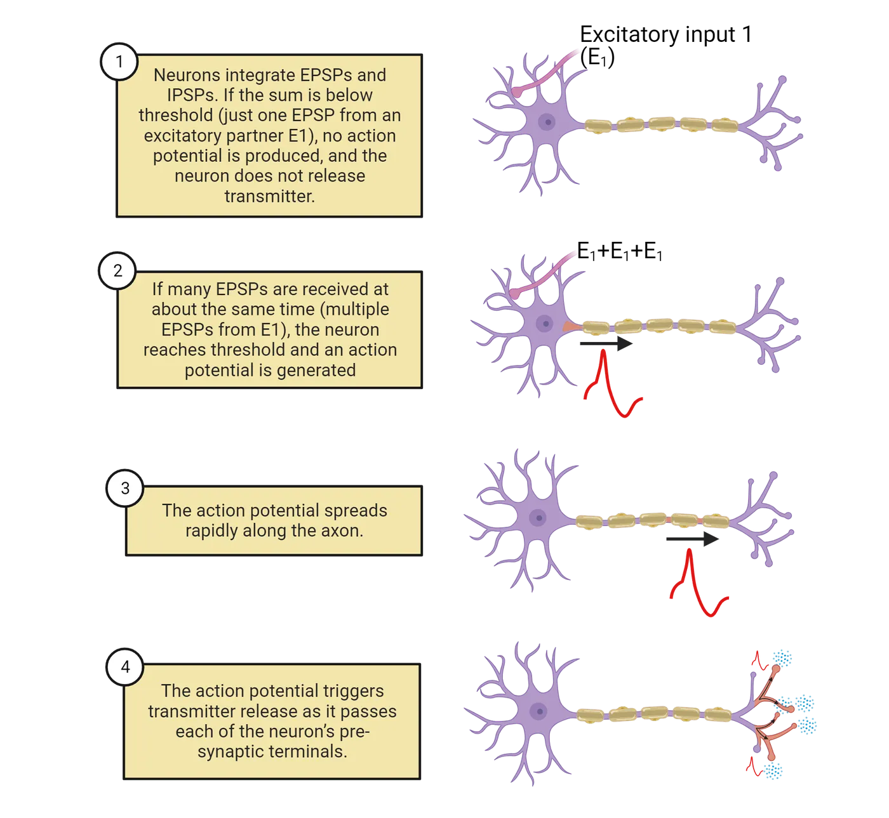
How does a neuron decide when to “fire” an action potential? Based, in part, on the constant barrage of chemical messages it is receiving on the post-synaptic side of its synaptic contacts. The EPSPs and IPSPs produced by these messages push a neuron above or below its threshold for generating an action potential (Step 1 in Action potential spread and neurotransmitter release). When the balance of excitation and inhibition being received is below a neuron’s threshold, the neuron does not fire an action potential or release transmitter to its partner neurons. When the balance of excitation and inhibition rises above a neuron’s threshold, it fires an action potential (Step 2 in Action potential spread and neurotransmitter release). The action potential spreads from the cell body along the length of the axon and all of its branches (Step 3 in Action potential spread and neurotransmitter release). As it spreads, the action potential is translated back into chemical messages, triggering the release of neurotransmitter from the pre-synaptic side of all the neuron’s synaptic contacts (Step 4 in Action potential spread and neurotransmitter release). A neuron firing an action potential is said to be activated or excited, with each action potential producing a burst of chemical signals to its synaptic partners.
The more excitation a neuron receives, the more frequently it fires action potentials. But this doesn’t make the action potential itself taller, stronger, or faster. Action potentials are ‘all-or-nothing’—each action potential a neuron generates is basically just like every other. There can be, however, considerable diversity between neurons. For example, some neurons fire action potentials that spread very quickly; others fire action potentials that spread more slowly. In addition, neurons are highly dynamic. Experience, disease, and maturation can change a neuron’s threshold, which synaptic partnerships it maintains, and more. For example, modulatory signaling in your nervous system is constantly fine-tuning action potential thresholds, lowering them to produce more activity during times of concentration and raising them to produce less activity during rest and sleep (more on this in Introduction).
Excitation and inhibition from partner neurons are not the only factors that determine when a neuron fires an action potential. Some neurons fire action potentials in response to changes in the outside world. We call these sensory neurons. In addition, most neurons in your nervous system generate action potentials spontaneously, meaning that they generate action potentials from time to time even without excitatory messages from partner neurons. For example, motor neurons, the neuron which release transmitter onto muscles, are often spontaneously active. This regular activity in your motor neurons maintains muscle tone (see Introduction). In spontaneously active neurons, EPSPs and IPSPs from partner neurons serve to speed up (when excited) or slow down (when inhibited) the rate at which action potentials are fired. In Internal and external triggers for action potentials you can see an example of a sensory neuron (left) responding to the outside world and a spontaneously-active motor neuron (right) that changes its rate of firing to control muscle tension.
![2x3 display. Top left: Diagram of a bipolar neuron, with terminals in skin, resting. Line graph below shows potential (y-axis) versus time (x-axis) and line is flat. Middle left: Diagram of a bipolar neuron, with terminals in skin, stimulated. Line graph below shows potential (y-axis) versus time (x-axis) and line shows occasional action potentials. Bottom left: Diagram of a bipolar neuron, with terminals in skin, heavily stimulated. Line graph below shows potential (y-axis) versus time (x-axis) and line shows frequent action potentials. Top right: Diagram of a unipolar neuron, with terminals in muscle, at rest. Line graph below shows potential (y-axis) versus time (x-axis) and line shows occasional action potentials. Middle right: Diagram of a unipolar neuron, with terminals in muscle, inhibited. Line graph below shows potential (y-axis) versus time (x-axis) and line shows very few action potentials. Bottom right: Diagram of a unipolar neuron, with terminals in muscle, stimulated. Line graph below shows potential (y-axis) versus time (x-axis) and line shows frequent action potentials.](../assets/textbook/img/Image-2.28_Internal-and-external-triggers-for-action-potentials.webp)
The electrical signaling system in neurons is relatively new in the history of life, emerging at the dawn of the Animal kingdom at least 500 million years ago (though with important precursors in other life forms; Anctil, 2015). Electrical signaling enables neurons to coordinate information throughout your body with speed and precision, something that would be difficult to do with chemical communication alone. For example, you have sensory neurons in your toe (Simple reflex circuit). The axons of these neurons ascend in your sciatic nerve to the base of your spine (depending on how tall you are, that can be a distance of up to 1 meter!). Pinch your big toe and you will trigger action potentials in your toe sensory neurons that spread to the spine within a couple of milliseconds, releasing transmitter onto partner neurons in the spine. Some of these partner neurons will send signals back down to the muscles of your leg and foot to cause muscle contractions to jerk your foot away from the pain. Other neurons will generate action potentials that spread rapidly to the brain, hopefully triggering you to question your life choices:
![Top left: Diagram of human body with brain and spinal cord showing neuron path from spinal cord to foot. Top right: diagram of spinal cord section showing input neuron from skin, connecting interneuron and output neuron to muscle. Bottom left: diagram of spinal cord section showing input neuron from skin, connecting interneuron and output neuron to muscle. Skin is stimulated and action potentials are present throughout circuit. Bottom right: diagram of spinal cord section showing input neuron from skin, connecting interneuron and output neuron to muscle. Skin is pinched and action potentials are present at high frequency throughout circuit.](../assets/textbook/img/Image-2.15_Simple-reflex-circuit.webp)
Why would you pinch your big toe? Just because your neuroscience textbook told you to? These circuits, showing neural circuit from sensory neuron to spinal interneuron to motor neuron, are diagrammed at the top of Simple reflex circuit.
Neurons don’t just transfer information; they also process information. Each neuron synthesizes the excitation and inhibition received from thousands of synaptic partners, instantly tallying up these different influences to help determine when an action potential will be generated. In addition, the threshold for an action potential means that neurons filter information. Inputs that push a neuron above threshold produce action potentials, which then cause neurotransmitter release to partner neurons. Inputs that do not reach threshold are essentially ‘ignored’ or filtered out. For example, recall again the toe-pinching experiment shown in Simple reflex circuit. The interneuron in that circuit filters out gentle stimuli, ensuring only painful stimuli produce a withdrawal. If your toe is only lightly touched (bottom left), there won’t be very much sensory neuron activity, so the interneuron will receive some excitation but not quite enough to get to threshold. In that case, the interneuron does not fire an action potential, and the motor neuron never gets the message: the light touch is ignored. A strong pinch, though (Ow!), produces enough sensory activity to drive the interneuron to threshold (bottom right), and it passes along the message to the motor neuron, producing a behavior to get away from the painful stimulus. Thresholds give neural circuits the ability to ignore some events and respond to others, a key ability for using the body’s energy wisely.
Summary
Neurons are bilingual, using two inter-related but distinct signaling systems. Communication between neurons primarily uses the ancient language of chemical and receptor that all your cells use, though with adaptations for highly targeted and reliable communication. Grafted onto this ancient system is an electrical signaling system that transfers information within a neuron with a level of speed and precision that is relatively unique to the animal kingdom. An engineer probably wouldn’t have designed such a complex system. Instead, the hybrid nature of neural signaling reflects the piecemeal adaptation of nervous system functioning through a long evolutionary history. From this complexity emerges neural processing. The back-and-forth-and back-again transformation from chemical to electrical to chemical signaling enables neurons to synthesize, filter, and transform information in complex and fascinating ways.
Key terms
Neurotransmitters, Action potentials, Chemical synapses, Synaptic cleft, Pre-synaptic, Pre-synaptic terminal, Post-synaptic, Post-synaptic terminal, Excitatory Post-Synaptic Potential (EPSP), Inhibitory Post-Synaptic Potential (IPSP), Electrical Synapse, Connexon, Resting Potential, Threshold, Sensory Neuron, Motor NeuronReferences
Anctil, M. (2015). Dawn of the neuron: The early struggles to trace the origin of nervous systems. McGill-Queen’s University Press.
Herculano-Houzel, S. (2012). The remarkable, yet not extraordinary, human brain as a scaled-up primate brain and its associated cost. Proceedings of the National Academy of Sciences, 109,(Supplement 1), 10661–10668. https://doi.org/10.1073/pnas.1201895109
Pakkenberg, B., Pelvig, D., Marner, L., Bundgaard, M.J., Gundersen, H.J.G., Nyengaard, J.R., & Regeur, L. (2003). Aging and the human neocortex. Experimental Gerontology, 38(1), 95–99. https://doi.org/10.1016/S0531-5565(02)00151-1
Testa-Silva, G., Verhoog, M.B., Linaro, D., de Kock, C.P.J., Baayen, J.C., Meredith, R.M., De Zeeuw, C.I., Giugliano, M., & Mansvelder, H.D. (2014). High bandwidth synaptic communication and frequency tracking in human neocortex. PLoS Biology, 12, (11), e1002007. https://doi.org/10.1371/journal.pbio.1002007
Todnem, K., Knudsen, G., Riise, T., Nyland, H., & Aarli, J.A. (1989). The non-linear relationship between nerve conduction velocity and skin temperature. Journal of Neurology, Neurosurgery and Psychiatry, 52,(4), 497–501. https://doi.org/10.1136/jnnp.52.4.497
Practice The multiple-choice and fill-in-the-blank questions for this section are interactive and live on OpenStax, so they are not carried here: open the book on openstax.org.
2.2Neural Circuits
By the end of this section, you should be able to
- Describe the rhythmic behavior produced by the simple swim circuit in Tritonia diomedea.
- Define some of the key features of neural circuits: parallel processing, feedback, efficiency, and a careful balance between excitation and inhibition.
- Describe the work of computational neuroscientists to build mathematical models of neurons and neural circuits.
As specialists in communication, neurons do not work on their own, but in interconnected groups, often called a neural circuit or a neural network. Even small numbers of neurons can generate remarkably complex behavior. To see this, let’s examine a very simple neural circuit: the “swim” network in the sea slug Tritonia diomedea.
In the swim circuit of Tritonia diomedea a few neurons produce rhythmic behavior important for survival
Tritonia is a species of slimy mollusk that glides along the ocean floor off the west coast of the United States and Canada. The mortal enemy of a Tritonia is the Pacific sea star, a voracious predator that loves to dine on Tritonia. To avoid this fate, a Tritonia “swims” away if it feels the touch of a sea star. Well, actually the Tritonia kind of thrashes about, arching its back, then relaxing, then arching again, in a rhythmic motion that helps it move up into the ocean current. When the Tritonia stops swimming, it sinks back down to the ocean floor, hopefully far away from the hungry sea star. Check out a video of a Tritonia escaping a sea star here:
Researchers have found that Tritonia swim away from danger with the help of a relatively simple neural circuit (Willows and Hoyle, 1969; Getting, 1983), consisting of sensory neurons, motor neurons, a partner neuron, and an inhibitory neuron.
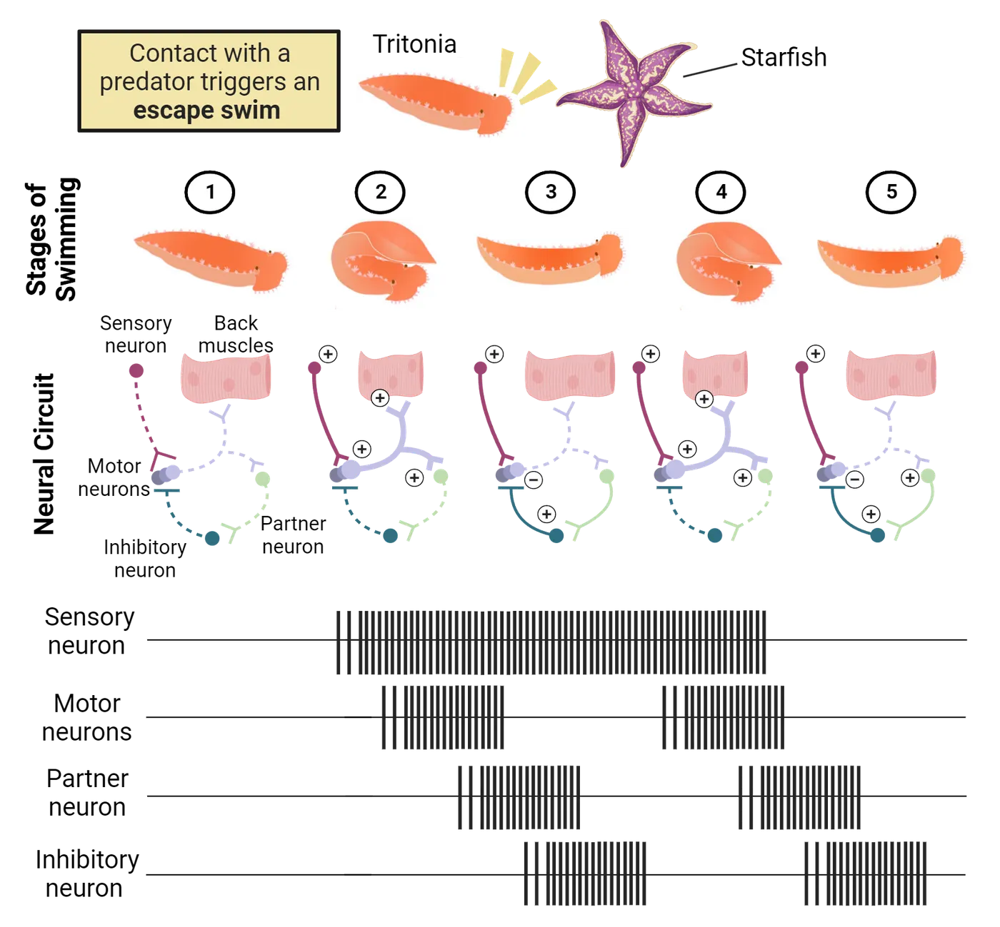
The sensory neurons in the skin are tuned to specific chemicals on the tentacles of the Pacific sea star. When these are detected, the sensory neurons become very excited, firing a long-lasting barrage of action potentials (Step 2 in The swim circuit in Tritonia diomedea; each hash line represents an action potential). The sensory neurons release excitatory transmitter onto a set of 3 motor neurons which control the muscles of the back. When these motor neurons reach threshold they fire action potentials, contracting the back muscles to produce the arching movement that forms the first half of the ‘swim’ rhythm (a behavior that is cyclical or periodic).
This is not all the motor neurons do. They also release excitatory transmitter onto a partner neuron, which in turn excites an inhibitory neuron (Step 3 in The swim circuit in Tritonia diomedea). This inhibitory neuron provides feedback to the circuit, inhibiting the motor neurons. When this happens, the inhibition overwhelms the excitatory input from the sensory neurons, and the motor neurons are pushed below threshold. With the motor neurons inactive, the back muscles relax and the Tritonia straightens out. At this point, it has arched back and then relaxed forward, completing a ‘swim’ rhythm.
Can you predict what will happen next? Stop and think about it for a moment. If you predicted that the whole cycle would begin again, you’re spot on: with the motor neurons inactive, the partner neuron and, in turn, the inhibitory neuron are no longer being excited, so they stop firing action potentials and the motor neuron is released from inhibition. That means the long-lasting activity in the sensory neurons is again able to activate the motor neurons, producing another arching of the back (Step 4), followed by another round of inhibition that again relaxes the animal forward (Step 5 in The swim circuit in Tritonia diomedea). The whole cycle repeats over and over again until the sensory neurons stop firing, which usually takes 10 to 30 seconds (far longer than the brief touch of the predator). Thus, just a few neurons in the Tritonia nervous system transform an outside event (a sea star touch) into a complex and long-lasting rhythm that ‘swims’ it away from danger.
The Tritonia swim network is not only rhythmic; it is also dynamic, changing based on the Tritonia’s experience. For example, if a Tritonia is injured, the sensory neurons become hyper-excitable, firing at a lower threshold and for longer times. This shifts the Tritonia to be more likely to swim and to swim more vigorously, hopefully protecting it from further injury (but also using precious energy). The swim network can also shift in the other direction. If a Tritonia is gently touched over and over again, the sensory neurons produce smaller and smaller EPSPs, and the network begins to ignore this gentle touch, learning that it does not pose a real danger (Brown, 1998; Hoppe, 1998). The dynamic nature of the swim network helps the Tritonia strategically allocate its energy based on its experiences—to swim away from real danger while also saving energy by ignoring events that are innocuous (meaning harmless or non-threatening).
Even though the Tritonia swim circuit is simple, it can still malfunction. If the connection to the inhibitory neuron is weakened, there will not be enough inhibition to pause activity in the circuit, and instead the circuit will produce constant activity that could lock up the back muscles, freezing the Tritonia in an arched position that will make it into an easy dinner. Too much inhibition is also problematic. If the inhibitory neuron releases too much neurotransmitter, the circuit would pause for too long, letting the animal drop back down to the ocean floor before it has managed to get away from the sea star. Generating the swim rhythm that keeps a Tritonia safe requires just the right balance between excitation and inhibition to keep the circuit moderately but not excessively activated (Katz and Frost, 1997; Calin-Jageman et al., 2007).
Studying neural circuits reveals important principles about how nervous systems generate behavior
You probably never thought about the swimming behaviors of slimy mollusks before, but hopefully you found it exciting (pun intended!) to learn how just a few neurons can produce a life-saving behavior. One of the key goals of neuroscience is to uncover the secrets of more complex neural networks, such as the ones operating in your nervous system to produce language, emotions, and thought. There is still a lot we do not know, but even from the simple swim circuit of Tritonia we can glean a few key insights (Five principles of neural networks):
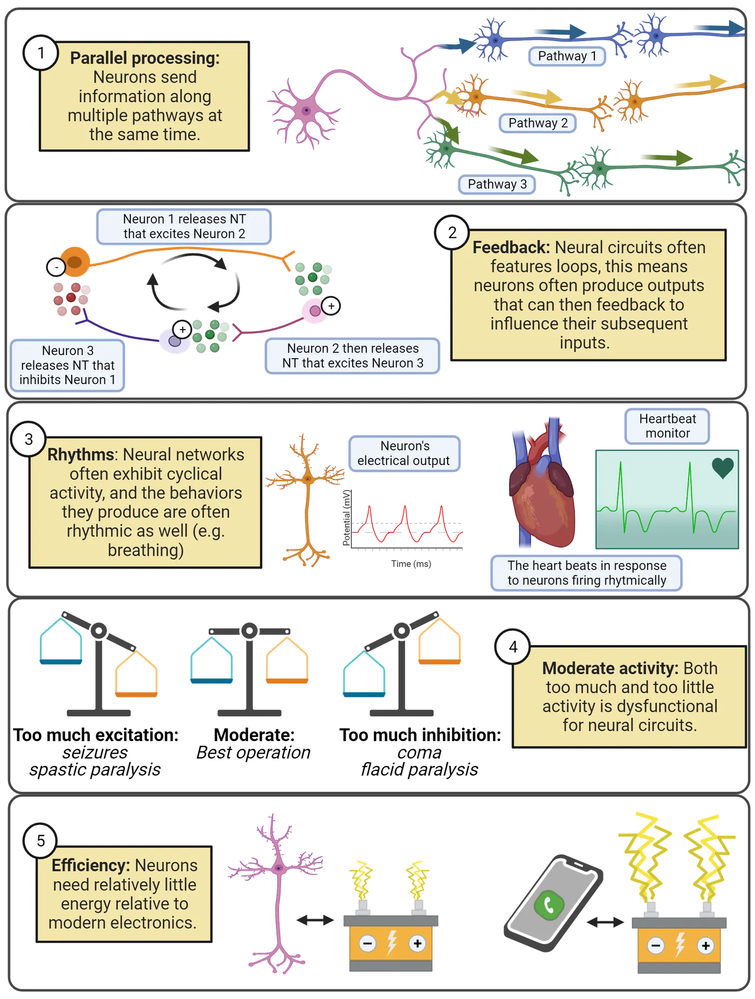
Neural networks feature parallel processing, meaning that information spreads along multiple pathways. In the Tritonia swim network, the motor neurons form synapses onto the muscles and onto a partner neuron that activates inhibition, sending messages along two distinct pathways at the same time.
Feedback, where a neuron influences the inputs it will later receive, makes even seemingly simple networks capable of producing complex patterns of activity.
Neural networks are often rhythmic or cyclical, exhibiting repeating patterns of activity and inactivity. This is reflected in the fact that many of our behaviors are also rhythmic: walking, sleep/wake cycles, breathing, and more. Introduction digs into detail on these fascinating cycles of neural activity.
Neural circuits can malfunction. They operate best at moderate levels of activity. They can easily be overwhelmed with excitation (which shows up in behavior as seizures or muscle spasticity) or inhibition (which shows up in behavior as torpor or muscle flaccidity). To work well, networks need both inhibition and excitation, and in the right balance.
Neural networks are highly efficient. Tritonia can swim away from danger with a network of less than a dozen neurons. Even with the large numbers of neurons in the mammalian nervous system, the efficiency of operation is incredible. Your entire brain uses about 20 watts of electrical power (Balasubramanian, 2021). For comparison, a modern Xbox or Playstation draws up to 160 watts of power. It is true that your brain uses a large fraction of your daily energy budget (about 500 kilocalories per day, or 25% of a typical 2,000 kilocalorie daily energy budget; Herculano-Houzel, 2012), but nervous systems are still remarkably efficient relative to the electronics around us.
What makes neural networks even more incredible is that they are self-assembled, following genetic and environmental signals to create and maintain the functioning of the network. How, exactly, this happens is still deeply mysterious. Introduction explains some of what we’ve learned about how neural circuits assemble.
Summary
Communication between neurons allows them to form circuits that can generate complex rhythms and behaviors. In the Tritonia swim network, attack from a predator activates sensory neurons as well as inhibitory feedback that generates cycles of contraction and relaxation that “swim” the animal away from danger. This example typifies some of the key properties of neural networks: they are highly efficient, operate in parallel, feature extensive and complex forms of feedback, but are susceptible to malfunction from either too much or too little activity. The field of computational neuroscience explores mathematical models of neurons that can be simulated on a computer; this field is succeeding in producing artificial networks that can mimic many of the remarkable behaviors produced by animal nervous systems.
Key terms
Rhythm, Feedback, Parallel processing, Model, Computational neuroscience, Simulation, Abstraction, Neural prostheticReferences
Balasubramanian, V. (2021.) Brain power. Proceedings of the National Academy of Sciences, 118(32), e2107022118. https://doi.org/10.1073/pnas.2107022118
Berger, T.W., Hampson, R.E., Song, D., Goonawardena, A., Marmarelis, V.Z., & Deadwyler, S.A. (2011). A cortical neural prosthesis for restoring and enhancing memory. Journal of Neural Engineering, 8(4), 046017. https://doi.org/10.1088/1741-2560/8/4/046017
Berger, T.W., Song, D., Chan, R.H.M., Marmarelis, V.Z., LaCoss, J., Wills, J., Hampson, R.E., Deadwyler, S.A., & Granacki, J.J. (2012). A hippocampal cognitive prosthesis: Multi-input, multi-output nonlinear modeling and VLSI implementation. IEEE Transactions on Neural Systems and Rehabilitation Engineering, 20(2), 198–211. https://doi.org/10.1109/TNSRE.2012.2189133
Brown, G.D. (1998). Nonassociative learning processes affecting swimming probability in the seaslug Tritonia diomedea: habituation, sensitization and inhibition. Behavioural Brain Research, 95(2), 151–165. https://doi.org/10.1016/S0166-4328(98)00072-2
Calin-Jageman, R.J., Tunstall, M.J., Mensh, B.D., Katz, P.S., & Frost, W.N. (2007). Parameter space analysis suggests multi-site plasticity contributes to motor pattern initiation in Tritonia. Journal of Neurophysiology, 98(4), 2382–2398. https://doi.org/10.1152/jn.00572.2007
Deadwyler, S.A., Berger, T.W., Sweatt, A.J., Song, D., Chan, R.H.M., Opris, I., Gerhardt, G.A., Marmarelis, V.Z., & Hampson, R.E. (2013). Donor/recipient enhancement of memory in rat hippocampus. Frontiers in Systems Neuroscience, 7. https://doi.org/10.3389/fnsys.2013.00120
Getting, P.A. (1983). Mechanisms of pattern generation underlying swimming in Tritonia. II. Network reconstruction. Journal of Neurophysiology,, 49(4), 1017–1035. https://doi.org/10.1152/jn.1983.49.4.1017
Hampson, R.E., Song, D., Robinson, B.S., Fetterhoff, D., Dakos, A.S., Roeder, B.M., She, X., Wicks, R.T., Witcher, M.R., Couture, D.E., Laxton, A.W., Munger-Clary, H., Popli, G., Sollman, M.J., Whitlow, C.T., Marmarelis, V.Z., Berger, T.W., & Deadwyler, S.A. (2018). Developing a hippocampal neural prosthetic to facilitate human memory encoding and recall. Journal of Neural Engineering, 15(3), 036014. https://doi.org/10.1088/1741-2552/aaaed7
Herculano-Houzel, S. (2012). The remarkable, yet not extraordinary, human brain as a scaled-up primate brain and its associated cost. Proceedings of the National Academy of Sciences, 109(Supplement 1), 10661–10668. https://doi.org/10.1073/pnas.1201895109
Hoppe, T. (1998). An evaluation of the role of synaptic depression at afferent synapses in habituation of the escape swim response of Tritonia diomedea. Master's thesis,The University of Texas Health Science Center at Houston.
Katz, P.S., & Frost, W.N. (1997). Removal of spike frequency adaptation via neuromodulation intrinsic to the Tritonia escape swim central pattern generator. Journal of Neuroscience, 17,(20), 7703–7713. https://doi.org/10.1523/jneurosci.17-20-07703.1997
Willows, A.O.D., & Hoyle, G. (1969). Neuronal network triggering a fixed action pattern. Science, 166(3912), 1549–1551. https://doi.org/10.1126/science.166.3912.1549
Practice The multiple-choice and fill-in-the-blank questions for this section are interactive and live on OpenStax, so they are not carried here: open the book on openstax.org.
2.3Principles of Bioelectricity
By the end of this section, you should be able to
- Define fundamental concepts of electricity (current (I), conductance (G), and electrical potential (V)) and the inter-relationships between them defined by Ohm’s law (I = GV).
- List the 4 electrolytes in our cellular fluids (K+, Na+, Cl–, and Ca2+) that underlie most electrical currents in neurons and describe how the movement of each electrolyte is determined both by electrostatic force (opposites attract; likes repel) and diffusion (movement from high to low concentration).
- Describe the major players controlling electrolyte movement: 1) the cell membrane, 2) ion pumps, and 3) ion channels.
In a chemistry lab at Harvard university, a team of researchers led by Adam Cohen is developing new ways to ‘listen in’ on the electrical signals in neurons (Kralj et al., 2012). One approach is the development of voltage-sensitive fluorescent proteins, genetically-engineered proteins that give off fluorescent light based on their electrical environment (this figure). When expressed in neurons, these proteins can translate the electrical signals in neurons into light that can be captured on a specialized camera. To test their work, the researchers carefully culture neurons, growing them in a dish where they can provide the nutrients the neurons need to survive plus the instructions for assembling the new voltage-sensitive proteins the lab has developed. One neuron is then placed under a fluorescent microscope equipped with a camera that can record 100,000 images per second. Adjusting the knobs on the microscope, the researchers bring a single neuron into focus. Then, they work intensely to keep the neuron healthy and the recording stable.
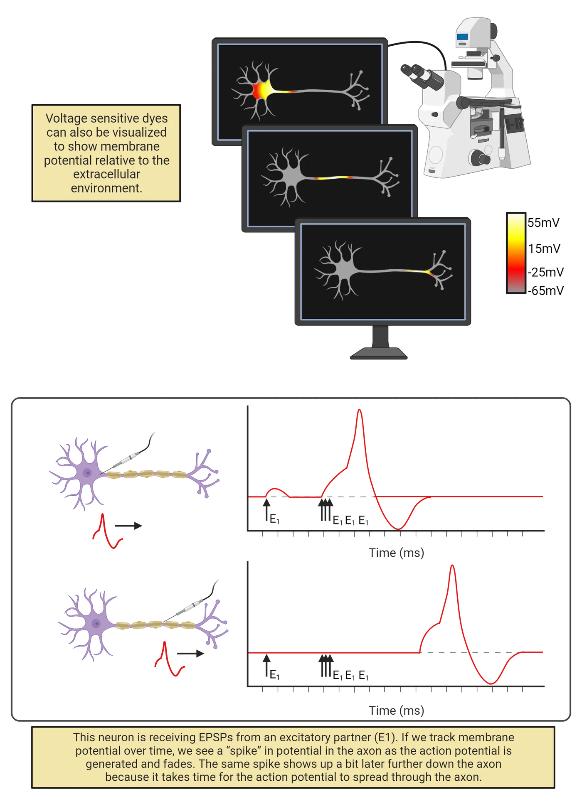
After several hours recording with the microscope (and several days processing all the data), the researchers assemble a remarkable video. Check it out here:
In the video, you can “see” the neuron generating action potentials. At first, there is no fluorescent signal in the neuron; it is at its negative resting potential and this does not activate the dye. Suddenly, though, we see a tiny glimmer of electrical change: the cell body has become positively charged! This region of positive charge then spreads out, traveling through every stem and branch of the neuron’s complex axonal tree. As quickly as it spreads, the action potential also fades, so the whole neuron is quickly back to its normal negative resting potential. The video is slowed down, but the timer on the top-left of the screen shows that the rise-and-fall of the action potential occurs very quickly, in less than 1 millisecond. If we graph the intensity of the dye over time, we see that each branch of the axon experiences this rapid “spike” in voltage, flipping from negative to positive and back again (bottom of this figure).
Watching this video, you are witnessing action potential propagation, the spreading of an action potential that relays information from one end of a neuron to another at great speed. But, you may be wondering: what, exactly, am I seeing? What does it mean to say that an action potential is electrical? Is the electricity in a neuron the same as what is coursing through your cell phone? If so, how do neurons generate their own electricity? To answer these questions, we first need to get our footing with some fundamental concepts of electricity. Then we’ll see how ion pumps and ion channels enable neurons to generate signals via the controlled movement of four electrolytes dissolved in your cellular fluids: sodium (Na+), potassium (K+), chloride (Cl–), and calcium (Ca2+).
As you read, you’ll see that this section (and the next) throws a lot of numbers at you. Don’t stress about memorizing these numbers. First, all the numbers in this chapter are approximate; the actual figures vary from neuron to neuron, and from species to species. More importantly, the numbers in this chapter are not for rote memorization but for thinking and building context. For example, in a section below you’ll read that the peak of an action potential reaches an electrical potential of about 40 mV. When you read that number, don’t waste time repeating it over and over again (you won’t have to know that exact number for the exam, I promise). Instead, seek some points of comparison to build your understanding. For example, a AA battery has an electrical potential of 1,500 mV and a wall outlet in the U.S.A. has an electrical potential of 120,000 mV. From thinking about these numbers you quickly understand that action potentials are much weaker than the potentials that power our electronics. Putting numbers in context (rather than just memorizing them) produces nummarcy rather than stress. So read on, ready to be engaged by, rather than intimidated by, the quantities you are about to encounter.
Fundamentals of electricity: Charge, current, conductance, and potential
Electricity is the movement of charge. Charge is a fundamental property of sub-atomic particles: electrons have a negative charge; protons have a positive charge. For reasons even physicists don’t completely understand, charges exert force on one another: opposites attract and likes repel (Electrochemical force).
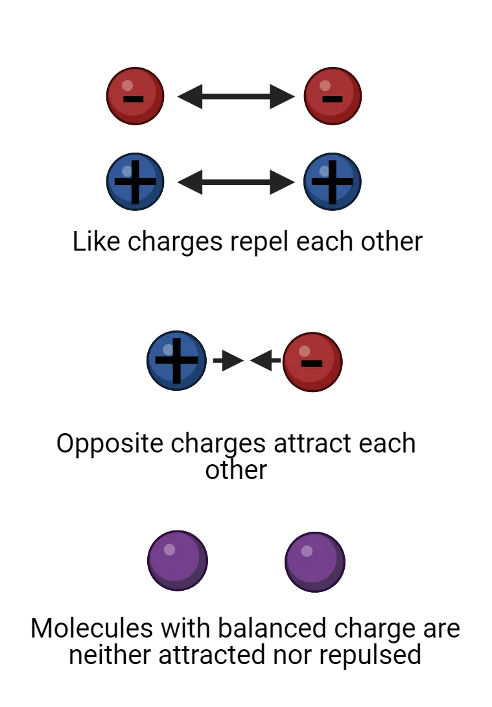
If a molecule has equal numbers of protons and electrons, then its net charge is 0 and the molecule is electrically neutral. When a molecule has an imbalance of protons and electrons, though, it is said to carry a charge, meaning that it has a net positive or negative charge that will exert electrostatic force on other charged particles. We call a charged particle an ion. In physics, charge is given the symbol and measured in coulombs.
Forces induce movement. Because of the electrostatic forces between them, ions move towards their opposites and away from their likes, if they can. The movement of ions is an electrical current. It is this movement of charge that we call electricity. Anywhere we see work being done by electricity there must be a current flowing: a light bulb glows as electrical current flows through its light-emitting diode, your laptop responds to your commands as electrical current surges through its transistors. In physics, the symbol for current is . We measure electrical currents in amperes (often shortened to amps), which tells us about the rate at which charge is flowing (number of Coulombs of charge per second).
When an electrical current flows, the path it takes can impede the movement of the ions or it can allow an easy passage. We call this conductance. Physicists use the symbol for conductance, which is measured in siemens. For example, water has a fairly high conductance, meaning that charged particles in water can rapidly respond to electrostatic forces, moving to disperse from their likes and to unite with their opposites. Cell membranes, on the other hand, have very low conductance, and act as insulator. (If you’ve had a physics class that discussed resistance rather than conductance, don’t panic: these are the same idea but expressed from different perspectives. Conductance is a measure of how easy it is to move charge; resistance is a measure of how difficult it is to move charge. You can convert back and forth between conductance and resistance: ; .)
By acting as an insulator, cell membranes can hold electrostatic forces “in check”, holding ions in place even if electrostatic forces are pushing to move them. We call this pent-up energy electrical potential; it is a push or pressure just waiting to generate a current should a conductive pathway become available. In physics, the symbol for electrical potential is , and it is measured in volts. You’ll often hear electrical potential referred to as voltage. Technically, this mixes up the unit (volt) with the concept (electrical potential), but the term has become so popular that we can accept voltage as a synonym for electrical potential.
Current, conductance, and potential are inter-related: (Ohm’s law).
![2x3 diagram: Top: Diagram of reference and recording electrodes placed outside and inside a cell membrane. Ions are shown inside and outside the cell. Right shows no charge separation. Left shows net negative charge inside the cell. Middle: Diagram of reference and recording electrodes placed outside and inside a cell membrane. Ions are shown inside and outside the cell. Right shows no flow of ions. Left shows net positive ion flow into the cell. Bottom: Diagram of reference and recording electrodes placed outside and inside a cell membrane. Ions are shown inside and outside the cell. Right shows no flow of ions. Left shows net positive ion flow into the cell.](../assets/textbook/img/Image-2.17_Ohms-law.webp)
This relationship is known as Ohm’s law. This means the electrical current that flows in a system is determined by the product of the conductance (how easy it is for charge to move) and the potential (how much pressure there is for charge to move). You can use algebra to re-arrange Ohm’s law to solve for different electrical concepts (for example, is also Ohm’s law); this is because in all of its forms Ohm’s law expresses the idea that potential, conductance, and current are inter-related in such a way that knowing any two of these values instantly tells you the third.
Electrical signaling in neurons involves changes in potential and can be measured with a voltmeter
Electrical signaling in neurons involves changes in current, conductance, and potential. The easiest of these to measure in neurons, though, is potential. Because of this, scientists first characterized and named the electrical signals in neurons in terms of electrical potential: the resting potential, excitatory and inhibitory post-synaptic potentials, and the action potential.
We can measure a neuron’s membrane potential by connecting it to a voltmeter, a device for measuring electrical potential (Measuring changes in neuronal membrane potential with a voltmeter). All that is needed is a voltmeter and two wires, or electrodes. For neurons, this usually means placing one wire, called the recording electrode, inside the neuron, and a second wire, called a reference electrode, outside the neuron. The voltmeter measures the electrical potential between these two points, indicating the difference in charge across the neuron’s membrane, its membrane potential. For neurons, this is usually reported in millivolts (mV). A negative membrane potential (as a neuron has at rest) indicates the inside of the neuron has a net negative charge relative to the outside of the neuron. A positive membrane potential (as a neuron has at the peak of an action potential) indicates the neuron has a net positive charge relative to the outside. A membrane potential of 0 volts would indicate no imbalance of charge: the neuron is electrically neutral relative to the reference electrode.
![Top: Diagram of reference and recording electrodes placed outside and inside a cell membrane of a neuron in a dish. Bottom is a 2x2 display: 1) Left: Diagram of receptors in a cell membrane. Ions are present, not moving Right: Membrane potential diagram over time. Line is flat and negative. 2) Left: Diagram of receptors in a cell membrane. Positive ions are moving in the cell through an open channel. Right: Membrane potential diagram over time. Line is rising. 3) Left: Diagram of receptors in a cell membrane. Positive ions are moving out of the cell through an open channel. Right: Membrane potential diagram over time. Line is falling. 4) Left: Diagram of receptors in a cell membrane. Ions are present, not moving Right: Membrane potential diagram over time. Line is flat and negative.](../assets/textbook/img/Image-2.31_Measuring-changes-in-neuronal-membrane-potential-with-a-voltmeter.webp)
In some ways, neurophysiology, the recording of electrical signals from neurons, is no different than when a mechanic checks the charge on your car’s battery. There are some huge technical difficulties, though, including the challenge of trying to place the tip of an electrode inside a microscopic neuron (!). The methods section in this book explains some of the specialized equipment that is used to make neurophysiology possible (see Introduction).
If you get your car battery checked at an auto shop, you will observe a stable potential (unless something has gone very wrong). In contrast, membrane potential in neurons is highly dynamic: it is negative at rest (Part A in Measuring changes in neuronal membrane potential with a voltmeter), becomes slightly more positive during an EPSP, becomes slightly more negative during an IPSP, and flips to positive and back to negative during action potentials. Because of this, we graph membrane potential as a function of time. When a neuron’s membrane potential increases, it means a current has flowed that either brought positive charge into the neuron or that removed negative charge (Part B in Measuring changes in neuronal membrane potential with a voltmeter). When a neuron’s membrane potential decreases, a current has flowed that either brought negative charge into the neuron or removed positive charge (Part C in Measuring changes in neuronal membrane potential with a voltmeter). When a neuron has a stable membrane potential, there is no net current, maintaining the neuron’s current charge (Part D in Measuring changes in neuronal membrane potential with a voltmeter). The currents that flow in neurons are typically quite small and are usually reported in nanoAmps (nA).
Another complexity of neural electricity is that membrane potential varies over the length of a neuron’s dendrites and axons. EPSPs and IPSPs alter membrane potential right at the synapse. Action potentials travel down the axon, with one segment flipping to a positive potential and then the next and then the next. Thus, we have to keep track of not only how membrane potential changes over time but also where membrane potential is changing.
Voltage-sensitive dyes enable us to measure potential along an entire neuron at once, so we can see the locations of different signals and how they spread (this figure). In contrast, a voltmeter can only measure membrane potential at the exact location of the recording electrode. Because of this, the first recordings of action potentials captured only the up and down of electrical potential at a single point, showing up as a “spike” in the membrane potential recording. The spread of an action potential had to be deduced from systematically moving the electrode along the length of the axon. When you see an action potential “spike” from a voltmeter, try to keep in mind that it is just a limited view of what is actually an electrical wave that spreads through the axon.
Electrical currents in neurons are the movement of four electrolytes dissolved in your cellular fluids: Na+, K+, Cl–, and Ca2+
What are the moving charges that generate electrical currents in neurons? They are trace minerals dissolved in your intracellular and extracellular fluids (Key electrolytes for neuronal signaling). Nearly all electrical signaling in neurons is due to the movement of just 4 minerals: sodium (chemical symbol Na+), potassium (chemical symbol K+), calcium (Ca2+) and chloride (Cl–). Notice the positive and negative symbols next to the chemical symbols. That is because each is not only a mineral but also an electrolyte, something that dissolves into water as an ion, a charge-carrying molecule. Because electrolytes dissolved in water carry a charge, their movement is an electrical current. It is the movement of Na+, K+, Cl–, and Ca2+ into and out of neurons that we observe as electrical signals in neurons.
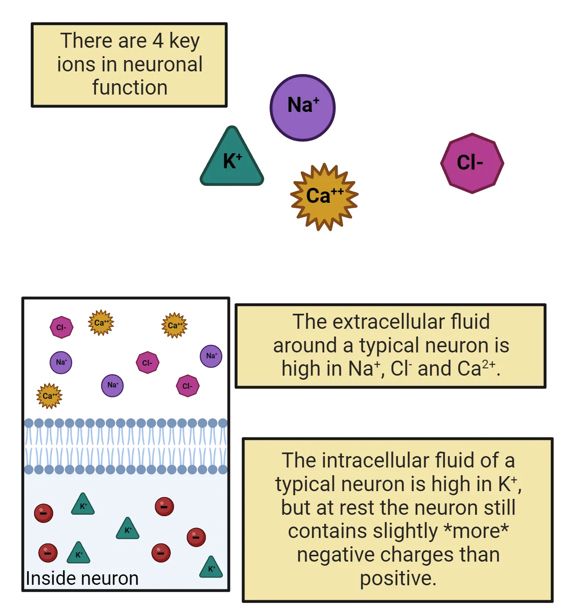
In the next section, we’ll examine the pressures that drive this movement: electrostatic force and diffusion. Before we move on, you might be wondering: where do electrolytes come from? The K+, Na+, Cl–, and Ca2+ dissolved in your cellular fluids come from your diet. For example, bananas are loaded with K+. You lose electrolytes in your urine and in your sweat, so you need daily intake from your diet to keep the proper balance of electrolytes in your body. That’s why sports drinks are always promising to “replenish your electrolytes”—they are selling you sugar water supplemented with a few milligrams of these basic minerals (though some leave out the calcium). Electrolytes are essential not only for generating neural electricity, but for nearly all cellular processes, including transcription and translation. This reflects the ancient origins of life in the Earth’s oceans: the Na+, K+, Cl–, and Ca2+ dissolved in your cellular fluids are the same trace minerals found in salt water and are ubiquitous (ever-present) in all cellular forms of life. At the dawn of the animal kingdom, new mechanisms evolved to harness electrolytes for a new function: neural signaling.
Electrolytes are moved by electrostatic force and diffusion but their movement is blocked by the cell membrane
What moves the molecules of electrolytes dissolved in your cellular fluids? Two things: electrostatic force and diffusion (Diffusion).
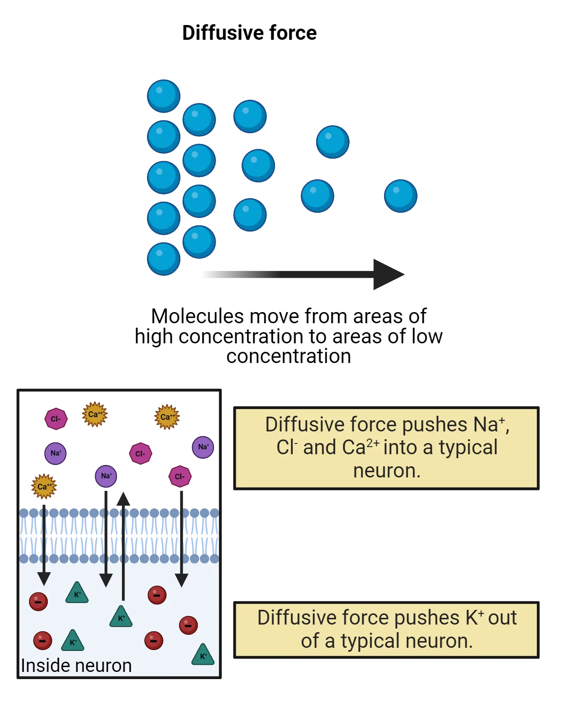
We’ve already discussed electrostatic force. Every molecule of Na+, K+, Ca2+, and Cl– dissolved in your cellular fluids carries a charge. Because of this, each is subject to electrostatic forces that push them towards their opposites and away from their likes.
Because they are dissolved in water, your electrolytes also diffuse, spreading out, as much as possible, towards equal concentration. The rules of diffusion are simple: when possible, solutes will always move down a concentration gradient, spreading from a region of high concentration to a region of low concentration, movement that would eventually produce equal concentrations. The steeper the concentration gradient (the more different the concentrations between regions) the stronger the push of diffusion.
Diffusion and electrostatic force sum and can produce strong pressure on ions to move. Water has a high conductance, so diffusion and electrostatic force easily move ions around inside your cellular fluids. The cell membrane, on the other hand, has a low conductance; ions cannot move directly through the cell membrane. Thus, a molecule of K+ inside a neuron cannot directly leave the neuron, even if electrostatic force and diffusion are pushing it to do so. You could say that the cell membrane is the Gandalf of neural signaling (“You shall not pass!”), but being that corny could lose you friends.
If the membrane blocks electrolyte movement, how do they travel into and out of neurons, generating the currents that carry signals in neurons? All ion traffic occurs via transmembrane proteins—amino acid machines that stick through the membrane. In the next sections we’ll discuss two families of proteins that control the movement of electrolytes: ion pumps and ion channels.
Ion pumps create concentration-gradient batteries, concentrating K+ inside neurons and Na+, Ca2+, and Cl– outside
For your cell phone to work, it needs a battery, something that can generate a steady electrical potential to push electrical currents through the circuits in your phone. Neurons also have batteries. They use ion pumps to create concentration gradients of the electrolytes found in your cellular fluids (Ion pumps).
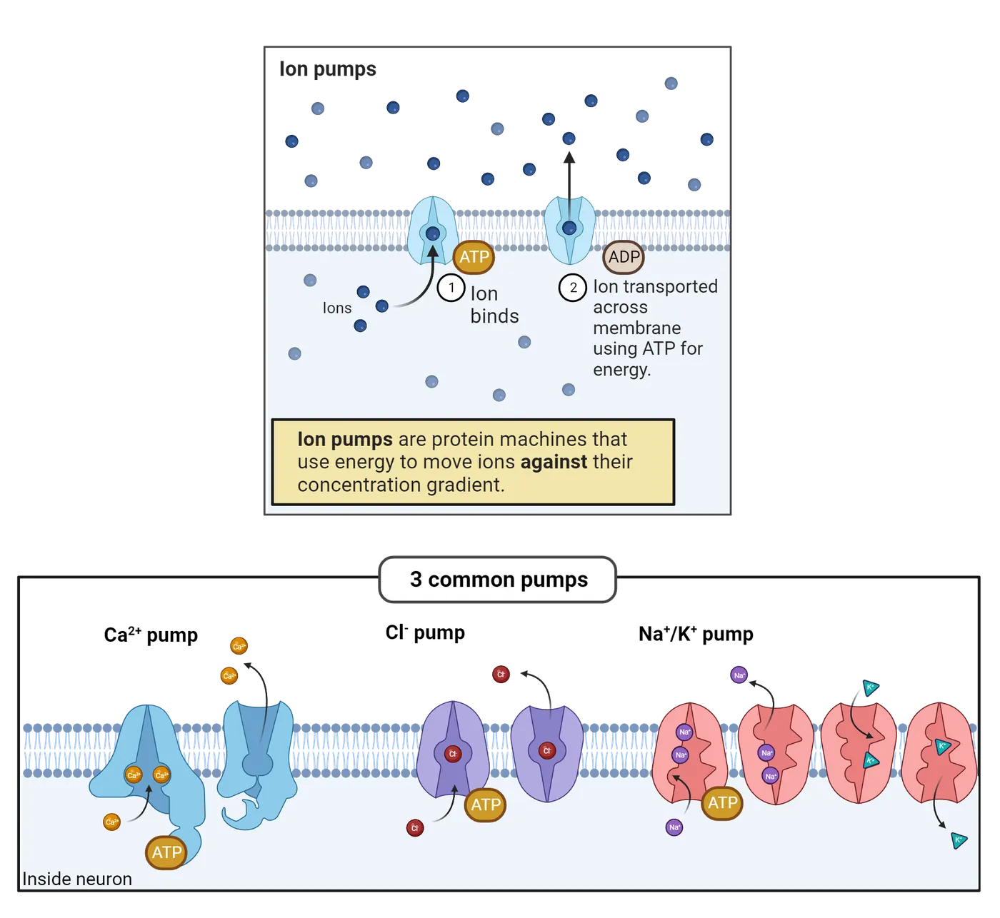
All the cells in your body express ion pumps, specialized proteins that stick through the membrane. Pumps use the energy-molecule ATP to actively transport ions across the cell membrane, working against diffusion to concentrate ions inside or outside of the cell. These concentration gradients are chemical batteries, giving each ion a distinct “push” from diffusion. The bottom of Ion pumps shows several of the most prominent ion pumps that help maintain the concentration gradients for the 4 major electrolytes. For example, one type of pump pushes Ca2+ out of the cell. Once pushed outside the cell, Ca2+ cannot directly re-enter (because the cell membrane acts like Gandalf). Thus, pumps cause calcium to become much more concentrated in the extracellular fluid than in the intracellular fluid. The specific concentration gradient can vary in different tissues, but in your brain most neurons have about 10,000x the concentration of Ca2+ outside the cell membrane compared to inside (Erecińska and Silver, 1994). This represents a strong push of diffusion for Ca2+ to enter cells, a positive current.
Like Ca2+, Cl– and Na+ are also pushed out by ion pumps. In neurons, Cl– is usually 20x more concentrated outside the cell membrane compared to inside, and Na+ typically about 7x more concentrated. Thus, both Na+ and Cl– have a pressure of diffusion to enter cells.
K+ stands out as the only major electrolyte pumped into cells. In neurons K+ is usually ~25 times more concentrated in the intracellular fluid than in the extracellular fluid. This means that there is a constant pressure of diffusion for K+ to leave cells, a negative current. this figure summarizes the concentration gradients pumps create for each of the electrolytes that play a key role in neural signaling.
| Name | Symbol | Typical intracellular concentration | Typical extracellular concentration | Typical concentration gradient (outside to in) | Equilibrium potential | Pressure of diffusion |
|---|---|---|---|---|---|---|
| Sodium | Na+ | 26 | 182 | 7 to 1 | +52 mV | Pressure for Na+ to enter, a positive current |
| Calcium | Ca2+ | 0.0001 | 1 | 10,000 to 1 | +124 mV | Pressure for Ca2+ to enter, a positive current |
| Chloride | Cl– | 7.45 | 149 | 20 to 1 | –81 mV | Pressure for Cl– to enter, a negative current |
| Potassium | K+ | 85 | 3.4 | 1 to 25 | –87 mV | Pressure for K+ to leave, a negative current |
Notice an interesting balancing act in the actions of the pumps. They import K+ into the neuron, filling the neuron with positive charge. This is mostly offset, however, by the fact that the pumps expel Na+ and Ca2+ from the neuron, removing those positive charges. In fact, if we tally up all the Na+ and Ca2+ and Cl– outside the neuron against all the K+ inside we end up very close to an even balance sheet in terms of both concentration and charge (though not quite even, as we’ll discuss in the section on the resting potential). Thus, pumps, on the whole, do not directly charge the membrane, and they do not upset the important balance of net electrolyte concentrations that all cells must maintain.
What pumps do achieve is the build-up and maintenance of strong concentration pressures that the cell membrane can then hold in place: Na+ and Ca2+ are just raring to charge the neuron to a positive potential, K+ and Cl– stand ready to charge the neuron to a negative potential. Note that K+ and Cl– are both on “team negative” despite having different charges; this is because K+ has a pressure to leave but Cl– has a concentration gradient to enter.
Ion channels are selective but passive conductors; some ion channels are gated
Look inside a laptop and you’ll see a tangle of wires, pathways of high conductance that allow electrical currents to flow. What are the ‘wires’ that carry electrical currents into and out of a neuron? It’s not the cell membrane, which has a low conductance. Instead, neurons (and all other cells) express ion channels (Ion channels). Ion channels are proteins that stick through the membrane. Each has a water-filled central pore through which specific ions can flow with high conductance. Ion channels allow currents of electrolytes to flow into and out of neurons.
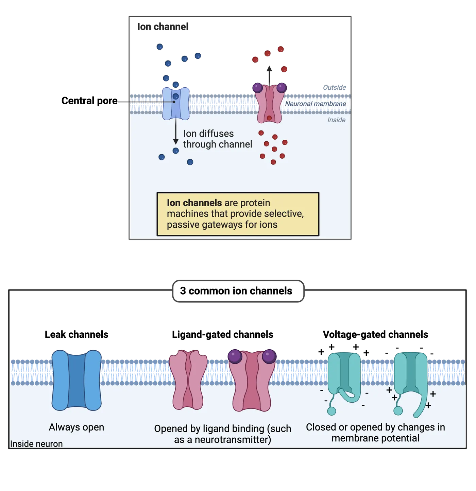
Unlike pumps, ion channels are passive. Any ion that fits through an ion channel is “free” to move through it in either direction. The channel does not add any “push” or use energy to direct the flow of ions. Instead, ion movement through channels is determined purely by the pressures operating on that ion (diffusion and electrostatic force). this figure gives a summary comparison between pumps and channels.
| Ion Pump | Ion Channel | |
|---|---|---|
| Biomolecule | Protein | Protein |
| Selective | Yes, each type of pump binds to and moves only specific electrolytes | Yes, each type of channel has a selectivity filter that allows only specific electrolytes to pass |
| Uses ATP | Yes | No |
| Central pore | No | Yes |
| Ion movement | Active transport— moves ions against their concentration gradient | Passive channel— central pore allows ions to move based on the electrostatic pressure and diffusion |
Although ion channels are passive they are nevertheless selective. Some channels are conductive only to Na+; they are called Na+ channels. Other channels are only conductive to K+; they’re called K+ channels. As you can probably already guess, there are also Ca2+ channels and Cl– channels.
Ion channels shows 3 common types of channels in the bottom panel. Some ion channels, called leak channels, are simply a pore with a selectivity filter—they provide a constant selective conductance. Other ion channels are gated, meaning that they can switch from open (a conformation with a high conductance) to closed (a conformation with a low conductance).
Gated channels don’t just open and close willy-nilly —they have sensors, specialized sections of their protein structure that determine when they open and when they close. For example, ligand-gated ion channels have sensors that bind to specific neurotransmitters, opening the channel only when the right transmitter is present. Voltage-gated ion channels have sensors that detect electrical events in a neuron, opening the channel only when the neuron reaches a specific membrane potential. This is just the tip of the iceberg. Other chapters will introduce you to channels that respond to many different events from the outside world (light, physical pressure, chemicals, and more). For this chapter, we’ll focus in on 3 families of ion channels that are critical for neural signaling: 1) leak K+ channels that produce the resting potential, 2) ligand-gated channels that produce EPSPs and IPSPs, and 3) voltage gated Na+ and K+ channels that produce the action potential.
Ionic Currents and Equilibrium Potentials
Pumps create concentration gradients that act like chemical batteries, storing up pressures of diffusion for Na+, Ca2+, and Cl– to enter neurons and K+ to leave. What happens when an ion channel is open, providing a pathway to release that pressure? We get a current, the flow of ions into or out of a neuron. This current charges the neuron, changing its membrane potential.
Let’s think about this in detail (this figure).
|
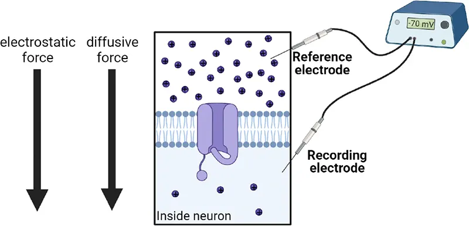 | At rest, Na+ is high outside the neuron. Both electrostatic and diffusive forces pull Na+ in but it cannot flow with no channels open. |
|
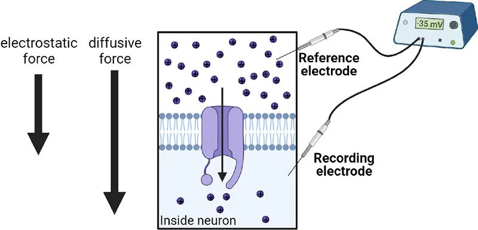 | Na+ channels open. Electrostatic and diffusive forces pull Na+ in the cell rapidly. This increases the membrane potential, weakening the elctrostatic attraction for Na+. |
|
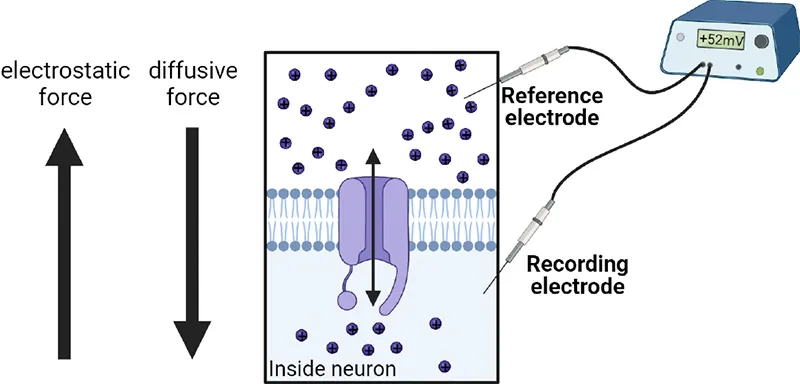 | As the neuron's potential becomes more positive, electrostatic repulsion starts to push Na+ out of the cell. At +52 mV, diffusion pushing Na+ in the cell is equally opposed by electrostatic repulsion pushing Na+ out. |
Imagine a neuron at rest (top of this figure). Its membrane potential is negative, around -70mV, meaning that it has an excess of unpaired negative charges in the intracellular fluid. Pumps have concentrated Na+ outside the neuron, but it cannot re-enter directly through the membrane. What happens if Na+ channels now open? Na+ will come flowing in: it is pulled in both by the pressure of diffusion (going from the high concentration outside the neuron to the lower concentration inside) and by electrostatic force (positive Na+ is attracted to the negative charge in the neuron). Each molecule of Na+ that enters, though, offsets some of the neuron’s negative charge, so the membrane potential begins to rise (middle of this figure). If Na+ channels stay open, the neuron will eventually become neutral (its membrane potential will rise to 0mV); this occurs when enough Na+ has entered to fully offset all the negative charges that had given the neuron a negative resting potential. At this point, there is no longer any electrostatic pull for Na+ to enter, but there is still a strong pressure of diffusion, so Na+ will continue to enter, charging the neuron up to a positive potential. Will this continue forever? No: as the neuron becomes more positive it becomes increasingly repulsive to Na+ (likes repel), and eventually this electrostatic force will be able to stand up to the pressure of diffusion, preventing any further increase in Na+ (bottom of this figure). We call this the equilibrium potential. An ion’s equilibrium potential depends (mostly) on the concentration difference created by the pumps: the bigger the concentration difference the more charged the neuron has to become before electrostatic force can stand up to it. For Na+ in a typical neuron, the equilibrium potential is about +52mV. That is: when Na+ channels open in a resting neuron, Na+ will rush in and keep rushing in until the neuron is charged up to +52mV, but at that point it will stop further charging the neuron even if the Na+ channels remain open.
When Na+ enters the neuron through a Na+ channel, is all the hard work of the pumps undone? To some extent, yes, but not by much. Amazingly, only a few thousand Na+ molecules have to enter a neuron to charge it from rest to +52mV, a small fraction of all the Na+ the pumps have pushed out of the neuron. This is because the neuron is small and the membrane is very thin: each ion inside a neuron has little space to spread out and is held tantalizingly close to opposite charges on the other side of the membrane. So, when Na+ channels open, Na+ rushes in to charge the neuron to the Na+ equilibrium potential (around +52mV) but this “spends” relatively little of the concentration gradient pumps have worked so hard to create.
What happens when there is a K+ channel open? The pressure of diffusion is for K+ to leave a neuron, and this departure is a negative current that builds a negative charge for the neuron. As the neuron becomes more and more negative, though, there is an increasing electrostatic attraction for K+ to come back in (opposites attract), and eventually this electrostatic charge can stand up to the pressure of diffusion for K+ to leave. In a typical neuron, the equilibrium potential for K+ is around -87mV, meaning that when K+ channels are open K+ brings the neuron’s charge to a very negative potential. Again, though, only a small fraction of all the K+ in the neuron has to leave to charge a neuron to this point.
this figure lists the equilibrium potential for all 4 of the important electrolytes in neural signaling. These numbers are not there to memorize but to help you build some context and understanding. Focus especially on the last column: Na+ and Ca2+ generate currents that pull a neuron up to positive potentials while Cl– and K+ generate currents that pull a neuron down towards negative potentials. Keeping those general trends in mind is key for understanding how resting, post-synaptic, and action potentials are generated.
Summary
This section was a crash course in the physics of neural signaling. If you made it through, you’ve seen that pumps are protein machines that use energy to build up concentration gradients of 4 key electrolytes, pushing K+ into neurons and Na+, Cl–, and Ca2+ out of neurons. The concentration gradients produced by pumps function as chemical batteries: they provide a “push” for K+ and Cl– to charge the neuron towards negative potentials and for Na+ and Ca2+ to charge the neuron towards positive potentials. The cell membrane holds back this push of diffusion. Ion channels, on the other hand, can open to allow the pressure for a specific ion to be partly released, producing currents that charge the neuron to that ion’s equilibrium potential. Ca+ and Na+ produce currents that charge a neuron to a positive potential. K+ and Cl– produce currents that charge a neuron to a negative potential. While ion currents can produce big changes in a neuron’s potential, they usually involve only a fraction of the ions the pumps have stored in or out of the neuron. The physics of neural electricity can be a bit daunting, but it provides a foundation from which we have built a detailed and powerful understanding of neural signaling.
Key terms
Voltage-sensitive fluorescent protein, Propagation, Ion pumps, Ion channels, Electrolytes, Charge, Electrostatic force, Ion, Current, Conductance, Insulator, Electrical potential, Ohm’s law, Membrane potential, Electrode (recording electrode, reference electrode), Neurophysiology, Solute, Diffusion, Concentration gradient, Battery, Ion channel, Selectivity filter, Ligand-gated ion channel, Voltage-gated ion channel, Equilibrium potentialReferences
Erecińska, M., & Silver, I.A. (1994). Ions and energy in mammalian brain. Progress in Neurobiology, 43(1), 37–71. https://doi.org/10.1016/0301-0082(94)90015-9
Kralj, J.M., Douglass, A.D., Hochbaum, D.R., Maclaurin, D., & Cohen, A.E. (2012). Optical recording of action potentials in mammalian neurons using a microbial rhodopsin. Nature Methods, 9(1), 90–95. https://doi.org/10.1038/nmeth.1782
Practice The multiple-choice and fill-in-the-blank questions for this section are interactive and live on OpenStax, so they are not carried here: open the book on openstax.org.
2.4Mechanisms of Neural Signaling
By the end of this section, you should be able to
- Explain how the resting potential is generated and defended primarily by leak K+ channels, which allow a constant but slow K+ current to pull the neuron towards the negative equilibrium potential for K+.
- Understand the role of ligand-gated ion channels in producing EPSPs and IPSPs, the small, transient, changes in membrane potential that represent the receipt of transmitter from partner neurons.
- Describe how the action potential is generated by the sequential opening of voltage-gated inactivating Na+ channels (allowing Na+ in to produce the rising phase, but which then clog) and voltage-gated K+ channels (which allows K+ to depart, accelerating the falling phase and producing the undershoot).
Before we took our deep dive into bioelectricity, we marveled at a video that used voltage-sensitive dyes to let us “see” action potentials spreading rapidly through a neuron. We’re now ready to unravel this fascinating signal, to learn about the incredible interplay of pumps, channels, and ions that allow each of your 86 billion neurons to generate the constant barrage of electrical signals that make you who you are. We’ll start by exploring the resting potential, then we’ll examine how this rest is perturbed by EPSPs and IPSPs imposed by synaptic partners. Finally, we’ll dissect the action potential and its rapid spread throughout the axon to produce transmitter release.
this figure gives a bird’s eye view of everything we’ll cover, breaking down the properties of the resting potential, post-synaptic potentials, and the action potential. Take a look at the table now if you want an overview to guide your reading, or dig into the details first and come back to the table to organize your thoughts at the end.
| Electrical signals in neurons | Description | Magnitude | Where | Key channels |
|---|---|---|---|---|
| Resting potential | Overall negative membrane potential maintained throughout a neuron when it is not receiving signals or generating an action potential | Around –60 to –80 mV, depending on the neuron | Global: the whole neuron maintains a negative potential | Leak K+ channels and Leak Na+ channels |
| EPSP | Brief, transient local increase in membrane potential due to detection of transmitter from a partner neuron | a 1-2 mV increase in membrane potential | Local: occurs right at the synapse | Transmitter-gated Na+ channels |
| IPSP | Brief, transient local decrease in membrane potential due to a detection of transmitter from a partner neuron | a 1-2 mV decrease in membrane potential | Local: occurs right at the synapse | Transmitter-gated Cl– channels |
| Action potential | Rapid flip in membrane potential from negative to positive and back that spreads rapidly through a neuron, triggering transmitter release at each of the neuron's synapses as it passes | Rapid increase in membrane potential to about +40mV (Rising Phase), then rapid decline to rest (Falling Phase) and even temporarily 5-10 mV below typical rest (Undershoot) | Traveling: usually initiated at the first segment of the axon then travels through all branches of the axon | Inactivating voltage-gated Na+ channels and non-inactivating voltage-gated K+ channels |
The resting potential is produced by leak channels and concentration gradients
The resting potential is an overall negative charge maintained by a neuron, typically around -65mV (though the exact value varies from neuron to neuron and can change). Neurons are sometimes said to “defend” their resting potential, meaning that after any stimulation they have a strong tendency to return quickly to rest. Neurons are not alone in having a resting potential—most of the cells in your body also maintain an overall weak negative charge.
The resting membrane potential is primarily due to the concentration-gradient for K+ (more inside than out) and special ion channels called leak K+ channels. As their name suggests, leak K+ channels are selective for K+ and always open (Leak channels). 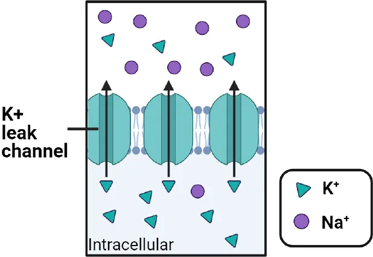
Not only do leak K+ channels allow K+ to produce a negative charge on a neuron, they allow the neuron to keep returning to that negative charge. Leak channels defend the resting potential shows how this works.
![Top: Diagram with a neuron with a stimulating electrode in it next to Line graph of membrane potential over time showing a depolarization due to electrode input. Bottom 4 steps shown left to right: 1) Diagram of cell membrane with K+ leak channels allowing K+ to escape freely. 2) Diagram of cell membrane with K+ leak channels allowing K+ to escape freely. Added + charge inside drives out more K+. 3) Diagram of cell membrane with K+ leak channels allowing K+ to escape freely. more added + charge inside drives out even more K+. 4) Diagram of cell membrane with K+ leak channels allowing K+ to escape freely. more added + charge inside drives out even more K+.](../assets/textbook/img/Image-2.33_Leak-channels-defend-the-resting-potential.webp)
For a neuron at rest (step 1), the K+ leak channels have allowed a few molecules of K+ to leave the neuron, leaving the inside of a neuron with a negative charge. Imagine we now make the neuron more positive by using an electrode to inject some positive charges (step 2). This upsets the balancing act between diffusion and electrostatic force for K+; the electrical pull into the neuron is now weaker (because the neuron is not as negative) so the push of diffusion to eject K+ temporarily “wins”, expelling a few more molecules of K+. Thus, the leak channels allow K+ to work against the positive current we are injecting and limit the degree we can charge the neuron (step 3). When we stop injecting current (step 4), K+ continues to depart until it pulls the neuron right back down to its normal resting potential. This is what we observe as the “defense” of the resting potential: the leak K+ channels provide a constant conductance that always allows K+ to pull the neuron’s membrane potential back towards the negative equilibrium potential for K+.
If leak K+ channels allow K+ to work against changes to a neuron’s membrane potential, how can there still be EPSPs, IPSPs, and action potentials? Shouldn’t K+ flow through leak channels to instantly cancel out any change in a neuron’s charge? The answer is that leak K+ channels are only weakly expressed in neurons; there are relatively few of them embedded in each neuron’s membrane. This low conductance keeps the flow of K+ fairly slow, so it does work against changes in membrane potential, but not instantly.Interestingly, neurons can change their excitability by changing how many leak K+ channels they have: the more leak channels expressed the more rapidly a neuron returns to rest and the harder it is to get it to threshold; the less leak channels a neuron has the easier it is for the neuron to reach threshold and fire action potentials.
Post-synaptic potentials are produced by ligand-gated channels
At the beginning of the chapter we found that neurons don’t just rest; they chatter away, firing action potentials that release chemical messages that excite (EPSP) or inhibit (IPSP) their partners (see Neural Communication). Each EPSP and IPSP is a small, temporary change in the membrane potential that is produced because neurotransmitter has been released by a synaptic partner. EPSPs and IPSPs are like “Yes” and “No” votes that determine if a neuron will get to threshold and fire an action potential. We’ll get to the action potential in the next section. For now we consider: how do chemical messages from a partner neuron get translated into the electrical “votes” we observe as EPSPs and IPSPs?
EPSPs and IPSPs are produced by ligand-gated ion channels (Ligand-gated channels).
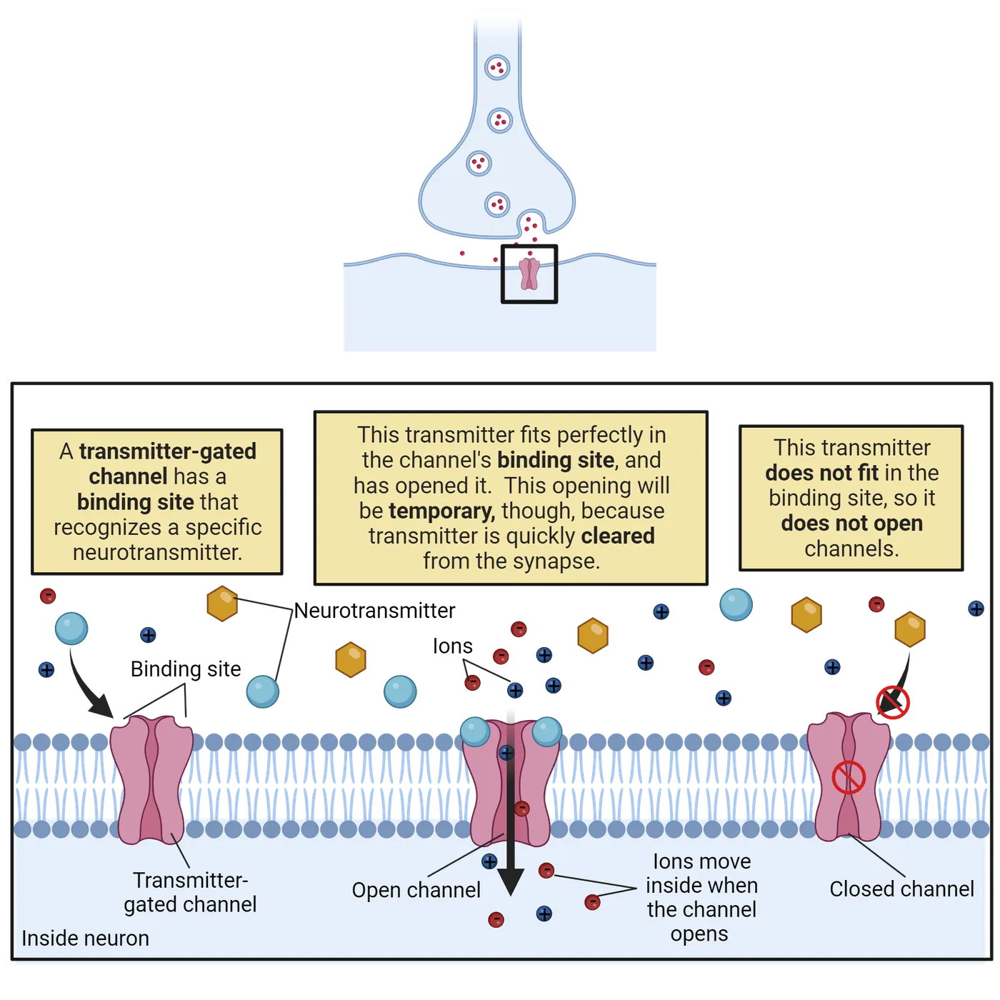
These are transmembrane proteins with a central pore. Each has an external binding site that recognizes a specific neurotransmitter. When a molecule of neurotransmitter fits into the binding site the channel is pulled open; when no transmitter is present, the channel stays closed. The post-synaptic side of each synapse is studded with hundreds of ligand-gated ion channels, so each burst of transmitter release from the pre-synaptic neuron produces a temporary but substantial opening of channels on the post-synaptic membrane, translating the chemical transmitter signal into a sharp change in conductance that allows current to flow.
There is tremendous diversity in ligand-gated ion channels, with the human genome containing genes encoding several hundred ligand-gated ion channels (Viscardi et al., 2021). Part of this diversity is due to differences in binding sites, with different receptors specialized for detecting different neurotransmitters. Introduction will discuss the different classes of neurotransmitters and their receptors in more detail.
What happens when a ligand-gated ion channel opens? That depends on its selectivity. If the channel is selective for Cl–, the channel produces IPSPs (top of EPSPs and IPSPs).
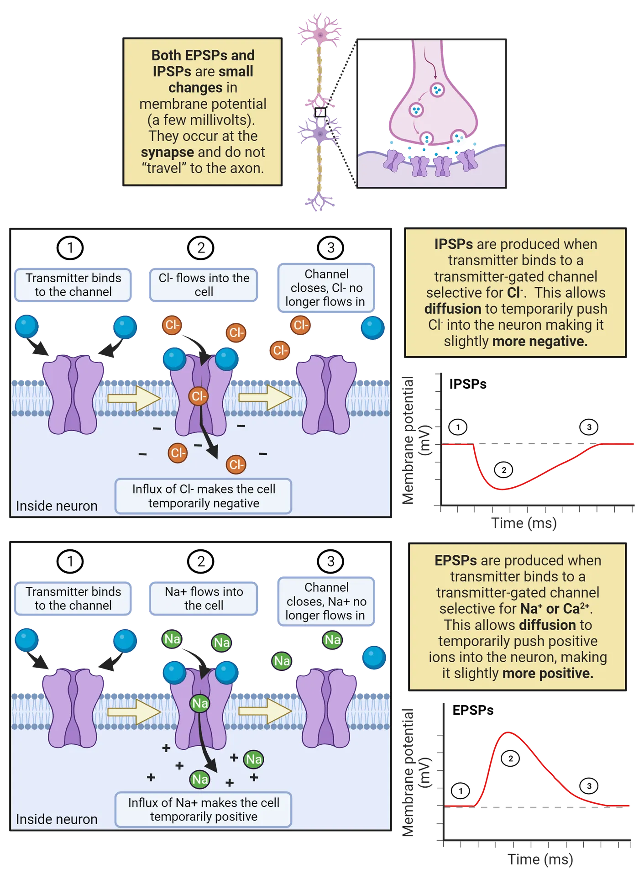
That is because in a neuron at rest there is pressure for Cl– to enter the neuron (see Principles of Bioelectricity). The higher outside concentration of Cl– enables diffusion to push Cl– through the open ligand-gated channels, producing a negative current that decreases the neuron’s membrane potential, moving it further away from the threshold for generating an action potential.
If the channel is selective for Na+ or Ca2+, the channel produces EPSPs (bottom of EPSPs and IPSPs). That is because both Na+ and Ca2+ carry a positive charge and are more concentrated outside the neuron than in, giving them a strong pressure to enter a neuron at rest. Therefore, an increase in conductance for these ions provides an opportunity for diffusion to produce a positive current that moves the neuron’s membrane potential towards threshold.
As you’ll have noticed, there are multiple steps for an EPSP or IPSP to be produced: transmitter has to be expelled from the pre-synaptic neuron, diffuse across the synaptic cleft, and then bind to a ligand-gated channel (Chemical communication by neurons). Only then does the post-synaptic neuron begin to get the influx of Na+, Ca2+, or Cl– that creates an EPSP or IPSP. This multi-step process creates a “synaptic delay”, a gap of up to 5 ms between the partner neuron firing the action potential and the post-synaptic neuron exhibiting the EPSP or IPSP. This time penalty for converting from electrical message (action potential) to chemical message (neurotransmitter) and back again (EPSP or IPSP) is one of the key factors limiting how quickly we can respond to outside events.
Once an EPSP or IPSP finally gets started, it very rapidly ends, usually within just 1ms. The transient (short-lived) nature of EPSPs and IPSPs is due, in part, to the fact that the neurotransmitter released by partner neurons is rapidly inactivated and recycled. As neurotransmitter is cleared from the synapse, the ligand-gated channels close. A second limiting factor are the K+ leak channels: almost as quickly as Na+ or Cl– can enter to produce an EPSP or IPSP, leak channels allow K+ to undo that work and pull the neuron back towards the neuron’s normal resting potential. Thus, each message from a partner is processed but quickly cleared; this keeps neurons tuned to the here and now (though neuromodulation and neuroplasticity enables long-term changes in the nervous system). Each synaptic message leaves the neuron with a few ions “out of place” (e.g. some extra Cl– inside with each IPSP). Pumps work continuously to put things back to normal. The constant need for pumps to reset ion concentrations is why they consume a large portion (about 28%) of your brain’s energy budget (Lennie, 2003).
Another notable feature of EPSPs and IPSPs is that they are usually quite small relative to a neuron’s threshold. For example, in a human cortical neuron, a single EPSP is estimated to increase the membrane potential at the soma by only 0.3 mV, whereas the threshold for generating an action potential usually requires about a 30mV increase in potential (Eyal et al., 2018).
If each partner message is so small, how does a neuron ever reach threshold? The answer is that EPSPs and IPSPs summate over space and over time. Temporal and spatial summation shows how summation works.
![Top: A diagram of a neuron that has 1 excitatory input above a line graph of membrane potential over time of subthreshold EPSP when input fires far apart in time. Bottom (left to right): 1) Top: A diagram of a neuron that has 1 excitatory input. Bottom: Line graph of membrane potential over time of suprathreshold EPSP when input fires close in time., 2) Top: A diagram of a neuron that has 2 separate excitatory inputs Bottom: Line graph of membrane potential over time of suprathreshold EPSP when inputs fire together., 3) Top: A diagram of a neuron that has 1 excitatory input and 1 inhibitory Bottom: Line graph of membrane potential over time of IPSP when inhibitory input fires alone and subthreshold EPSP when inputs fire together.](../assets/textbook/img/Image-2.06_Temporal-and-spatial-summation.webp)
At the top of the figure we see a neuron receive an EPSP from a partner neuron (E1) that is subthreshold, meaning it is too small to take it to threshold. This partner neuron can try again later (second arrow labeled E1), but the result is the same: poor E1 is being ignored by its synaptic partner! Things change, though, if E1 fires action potentials more rapidly (bottom left of Temporal and spatial summation), delivering the second EPSP before the first one has fully faded. In this case, a second round of Na+ or Ca2+ can enter before the postsynaptic neuron has returned to rest from the first EPSP, and this overlap brings the neuron much closer to threshold. We call this temporal summation because it adds up EPSPs from the same partner that occur close together in time. Neurons can only fire so fast, though. A far more effective way to get a partner neuron to threshold is to team up with its other inputs. As shown in the middle part of Temporal and spatial summation, if a neuron receives EPSPs from two different partners (E1 and E2) at the same time this creates a bigger EPSP than either could produce on its own. We call this spatial summation because it sums inputs from multiple locations across a neuron’s dendritic tree. Of course, neurons aren’t just tallying the “yes” votes of EPSPs: IPSPs also factor in, summing with ongoing EPSPs to pull the neuron away from threshold (bottom right of Temporal and spatial summation). Synaptic summation is just the simple addition and subtraction of charges, and yet it is what underlies the incredible ability of neurons to synthesize and integrate information.
The key point for synaptic summation is the axon hillock (also called the initial segment). The hillock is the very first part of the axon where action potentials are initiated, so this is where the sum of current EPSPs and IPSPs can tip a neuron past threshold. It’s worth reflecting again that most EPSPs and IPSPs make a very small impact on the axon hillock relative to its threshold: it is estimated that it would typically require the summation of about 100 EPSPs to trigger an action potential in a resting human cortical neuron (Eyal et al., 2018). That sounds like a lot, but keep in mind that a typical cortical neuron has about 7,000 synaptic contacts! Thus, receiving 100 excitatory messages at about the same time is a fairly common occurrence, though not so common that your cortical neurons are relentlessly activated.
The action potential is produced by sequential opening of voltage-gated Na+ and K+ channels.
The action potential is a rapid up-and-down of electrical potential that spreads through a neuron to trigger transmitter release. this figure diagrams each step of the action potential.
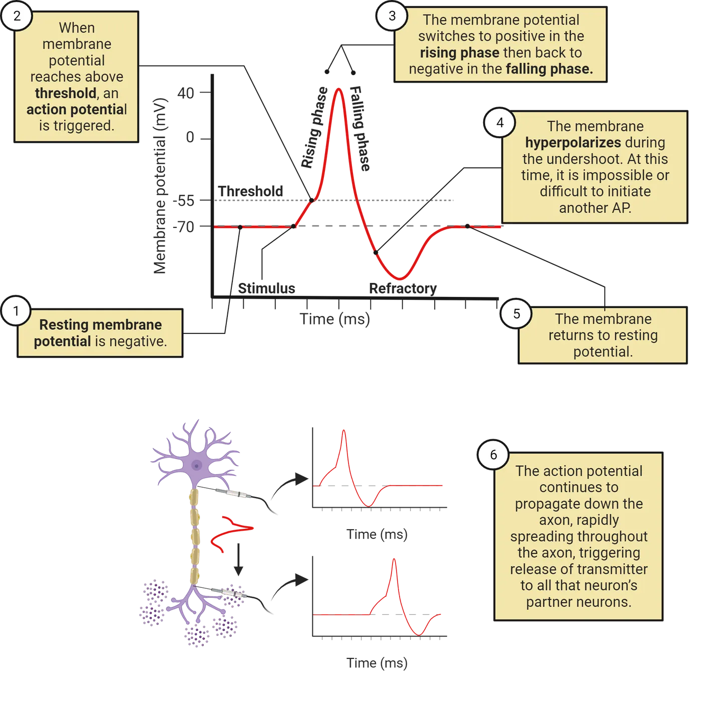
We start with a neuron at its typical negative resting potential (step 1) that then receives excitation strong enough to bring the neuron to threshold (step 2). Once at threshold, the action potential is initiated, starting in the cell body or right where an axon branches off from the cell body, a point called the initial segment or axon hillock (these terms are interchangeable). We observe the action potential as a rapid and dramatic rise and fall of electrical potential (step 3). During the rising phase (step 3), the neuron’s membrane potential flips from negative all the way up to a positive potential of around 40mV (though this varies from neuron to neuron). In a typical cortical neuron this upward climb in potential takes only about 0.5ms. This is followed immediately by the falling phase, when the neuron’s membrane potential descends just as quickly, falling back down to a negative potential and becoming even more negative than during the typical resting potential, often reaching about -85mV. The descent “below” rest is called the undershoot (step 4), and it takes a typical cortical neuron about 4-5 ms to gradually return to the typical resting potential (step 5). Critically, this same rise, fall, and undershoot then occurs a bit further down the axon, then even further down, and so on. As the action potential propagates down the axon, it triggers transmitter release at each presynaptic membrane it passes.
The action potential is due to the operation of two specialized ion channels that are relatively unique to neurons: inactivating voltage-gated Na+ channels and non-inactivating voltage-gated K+ channels.
Inactivating voltage-gated Na+ ion channels are highly expressed in neurons, and are often inserted in the cell membrane specifically within the initial-segment and axon. Scientists classify these channels as voltage-gated because they have a sensor that holds them closed when a neuron is near its negative resting potential, but that pulls them open when a neuron’s membrane potential rises to threshold. A better name, though, would be excitation-sensing because it is excitation (EPSPs) from partner neurons that makes a neuron’s membrane potential positive enough to begin opening these channels. This gating of the voltage-gated Na+ channels is what we observe as the threshold for an action potential.
Action potential propagation shows how the inactivating voltage-gated Na+ channels produce the rising phase and propagation of the action potential.
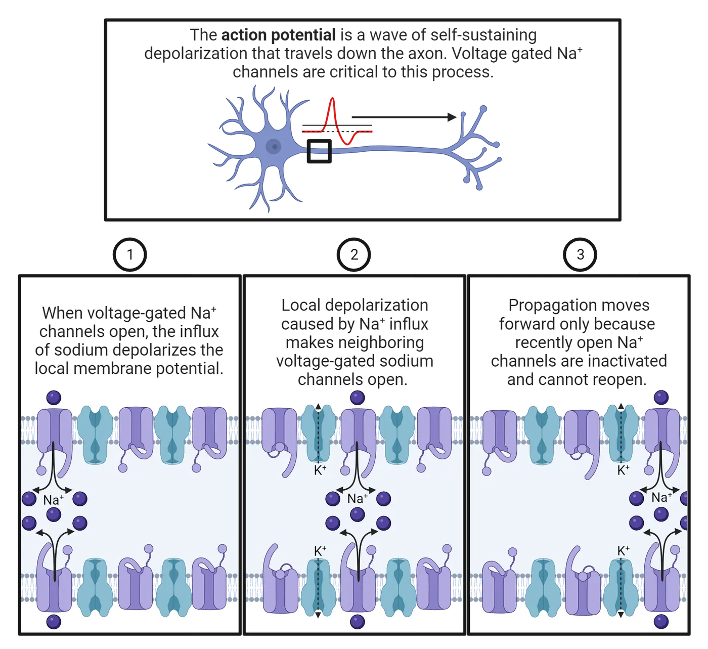
When threshold is reached, these channels open (step 1), producing a sharp increase in conductance for Na+: there are now many pathways available for diffusion to push Na+ into a neuron (recall that pumps have concentrated Na+ outside the neuron, so the pressure of diffusion is for Na+ to enter, see Principles of Bioelectricity). The result is a rapid influx of Na+ that quickly pulls the neuron’s membrane potential all the way up to a positive membrane potential. This is what we observe as the rising phase of an action potential.
The rising phase of the action potential propagates down the axons because the opening of one voltage-gated Na+ channel produces a chain reaction (step 2 in Action potential propagation). The first voltage-gated Na+ channel to open allows Na+ to enter, causing an increase in membrane potential—the very thing that can trigger the opening of more voltage-gated Na+ channels! This positive-feedback loop, where each Na+ channel that opens can help trigger additional openings causes the action potential to propagate down the axons, triggering transmitter release at all that neuron’s pre-synaptic terminals along the way.
Although the rising phase on an action potential propagates through the axon, it is very brief, followed very quickly by a plunge back down to a negative potential. One factor limiting the rising phase is the inactivation of the voltage-gated Na+ channels. Each channel has a “tail” of positively charged amino acids on the intracellular side of the membrane. When these channels open and drive a neuron to a positive potential, the tail is repelled, and this repulsion actually pushes it into the channel, clogging it! Even though the voltage-sensor is still pulling the channel open (because the neuron has a positive membrane potential), the inactivating tails temporarily eliminates the Na+ conductance through these channels (step 3 of Action potential propagation).
The clogging of the inactivating voltage-gated Na+ channels is reversible. When a neuron returns to a negative resting potential, that negative charge attracts the positive charges in the inactivating tails, pulling them out of the Na+ channels so that they can work again. This amazing system helps prevent excessive activity in the nervous system: once a neuron generates an action potential, it cannot generate another until it returns to rest and the majority of its voltage-gated Na+ channels are unclogged. We observe this as a brief refractory period that occurs immediately after each action potential (recall, again, step 4 of this figure).
Action potential generation recaps these steps in the action potential, showing how a neuron goes from rest (step 1) to the rising phase (step 2) as the inactivating voltage-gated Na+ channels open, but then clog (step 3). With the clogging of the voltage-gated Na+ channels, Na+ can no longer enter the neuron. This means the leak K+ channels can now begin restoring the resting potential, allowing K+ to leave (it is more concentrated outside than in, and during the rising phase is also repulsed by the neuron) to bring the membrane potential back down to a negative potential. We observe this as the falling phase of the action potential.
![Middle: Line graph of action potential phases; membrane potential (y-axis) and time (x-axis). Steps shown surrounding middle: 1) Diagram of axon segment, with voltage-gated Na+ channels and voltage-gated K+ channels shown. Channels closed.. 2) Diagram of axon segment, with voltage-gated Na+ channels and voltage-gated K+ channels shown. Na+ channel is open and Na+ flows in. 3) Diagram of axon segment, with voltage-gated Na+ channels and voltage-gated K+ channels shown. Na+ channel is closed by inactivation gate. K+ channel is open and K+ flows out. 4) Diagram of axon segment, with voltage-gated Na+ channels and voltage-gated K+ channels shown. Na+ channel is closed by voltage-sensitive gate. K+ channel is open and K+ flows out.](../assets/textbook/img/Image-2.11_Action-potential-generation.webp)
The falling phase is “turbo charged” by voltage-gated K+ channels. These channels are somewhat similar to the voltage-gated Na+ channels: they have a sensor that detects increases in the membrane potential, swiveling them open when there is sufficient excitation. When these channels are open, they provide additional conductance for K+ above and beyond what is provided by the leak K+ channels. This allows K+ to be more rapidly pushed out of the neuron by diffusion, accelerating the falling phase (step 4 of Action potential generation). You can think of K+ as soccer fans trying to leave a stadium after a match. Everyone could be anxious to leave, but if there are only a few exits it will take a long time for the stadium to empty. The opening of the voltage-gated K+ channels is like adding a bunch of new exits to the stadium, allowing a much more rapid departure of the crowd. Without the voltage-gated K+ channels, it would take a typical neuron about 2-3 times as long to return to rest after an action potential, and that would greatly limit the frequency at which neurons can send messages.
Although the voltage-gated K+ channels respond to excitation in the same way that Na+ channels do, they are different in two key ways. First, the K+ channels do not inactivate—they stay open as long as the neuron has a positive charge, working continuously to allow K+ to depart to drive the neuron back down to its negative resting potential. A second distinctive feature is that the voltage-gated K+ channels are slow—their voltage sensor takes longer to open and to close the channels than the sensor on the voltage-gated Na+ channels. This “tardiness” is important, causing the K+ channels to only begin opening just as the Na+ channels are beginning to clog. This remarkable feat of timing makes the action potential extremely efficient, limiting the overlap between the increases in Na+ and K+ conductance that happen during the rising and falling phases. If the K+ channels opened earlier, K+ would be able to diffuse out of the neuron as quickly as the voltage-gated Na+ channels were allowing Na+ to diffuse in, an offsetting current that would produce no signal in the membrane potential!
A second consequence of the slow operation of the voltage-gated K+ channels is the undershoot (step 5 of Action potential generation). Even after the neuron begins to return to a negative charge, it takes a few milliseconds for the K+ channels to swivel closed. During this time, K+ continues to be able to leave the neuron, making the neuron temporarily more negative than usual. This is what we observe as the undershoot phase (step 6). The enhanced negative charge of the undershoot phase helps to unclog the voltage-gated Na+ channels, ending the refractory period (step 6). Ending the refractory period means the neuron is now capable of firing another action potential (the voltage-gated Na+ channels have been reset), and yet the undershoot makes this a bit less likely than usual by keeping the neuron a bit further from threshold for a few milliseconds. Thus, the undershoot both prepares the neuron for sending the next message while also helping to ensure the neuron isn’t hyper-active. What a clever system!
this figure provides another way of organizing all this information, providing an overview table of what is happening in each phase of the action potential.
| Channel | Expression | Resting potential | Beginning of EPSP | Rising phase | Falling phase | Back to resting potential |
|---|---|---|---|---|---|---|
| Channels | ||||||
| Leak K+ channels | Weakly expressed throughout neuron | Open | Open | Open | Open | Open |
| Transmitter-gated Na+ channels | Only expressed at synapses | Closed | Open | Closing | Closed | Closed |
| Inactivating voltage-gated Na+ channels | Strongly expressed through axon | Closed | Closed | Opening | Inactivated | Closed |
| Non-inactivating voltage-gated K+ channels | Strongly expressed through axon | Closed | Closed | Opening | Open | Closed |
| Membrane potential | ||||||
| Membrane potential | Around –65 mV | Rises several mV, triggering voltage-gated Na+ channels | Rises to around +40 mV | Falls, even more negative than rest | Around –65 mV | |
We see that each action potential is a sequential opening of voltage-gated Na+ channels and voltage-gated K+ channels, progressing down an axon and into all its synaptic terminals. The rapid opening of the voltage-gated Na+ channels allows the pressure of diffusion to rapidly push Na+ into the neuron, driving it from its negative resting potential all the way up to a positive potential that then opens the next voltage-gated Na+ channel and the next and the next, all the way down the axon. The voltage-gated Na+ channels clog, however, stopping the rising phase, and just as this happens the voltage-gated K+ channels finally open, allowing the pressure of diffusion to push K+ out of the neuron, a negative current that rapidly brings the neuron back down to its negative resting potential and even temporarily making the neuron more negative than usual. Each action potential, then, lets a bit of Na+ into the neuron and a bit of K+ out, undoing some of the hard work of the ion pumps. It’s a surprisingly small amount of Na+ and K+ that actually shuffles around, producing only a fractional change in concentrations. Still, ion pumps have to continuously operate to undo the Na+ entry and K+ departure that occurs with each action potential, otherwise the pressures of diffusion would gradually dissolve away and action potentials could no longer be generated (see Our Deep but Still Incomplete Understanding of Neural Signaling for an interesting example of how this can happen).
Action potential propagation is sped up by myelin
When you connect a battery to a wire, it pushes current directly through the circuit. As long as the wire is properly insulated, almost no current leaks out as it travels, so you don’t need additional batteries along the length of the wire, and current covers the distance of the circuit at very close to the speed of light. That’s why flipping a light switch instantly turns on your lights, even though the power station might be located several miles away.
As we have seen, that’s not exactly how an action potential propagates. Instead, neuronal axons are “leaky”, expressing leak K+ channels. This means that when the first segment of an axon experiences the rising phase, the Na+ that rushes in can quickly be offset by K+ rushing out. Due to this leak, the action potential is regenerated down the length of the axon, with each segment undergoing the precise opening and closing of voltage-gated channels that triggers the next segment, and so on. This takes time, and it means that the action potential does not travel down the axon at anything near the speed of light.
Many animals, including all mammals, have evolved ways to speed up action potential propagation by having support cells wrap axons in myelin, a fatty substance that insulates the axon, greatly limiting the operation of the leak channels (Saltatory conduction).
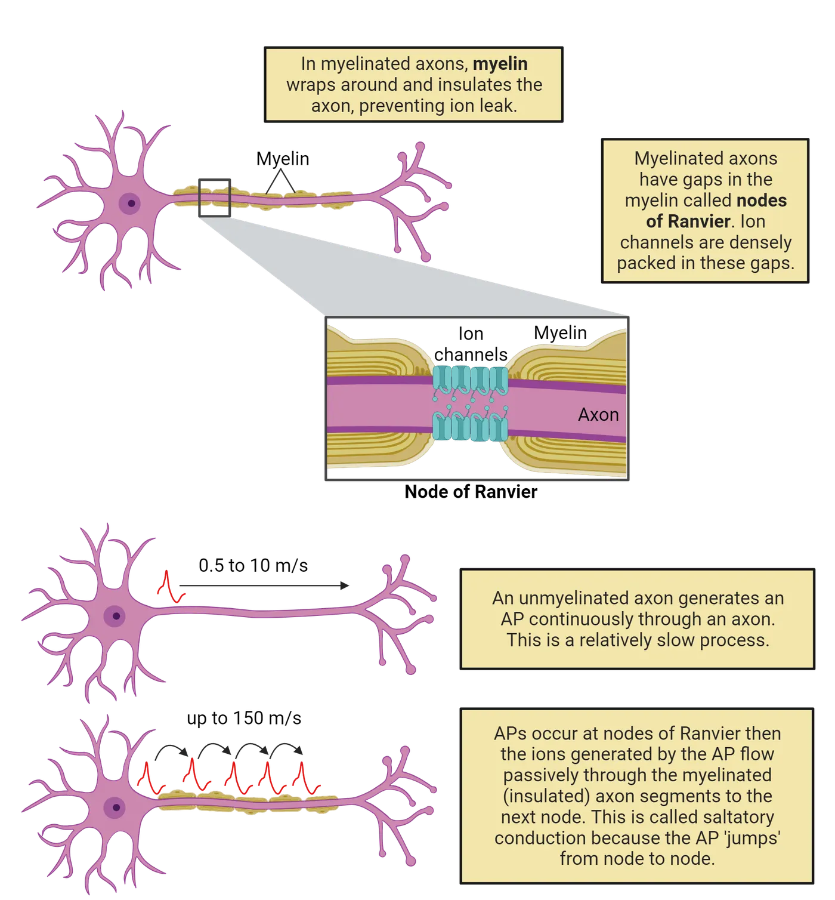
A segment of axon wrapped in myelin works more like the wires we’re used to dealing with in electronics: a current applied to one end can spread rapidly, at almost the speed of light, with fairly little leakage. That’s a great speedup in the spread of an action potential. Unfortunately, myelin isn’t perfect, and there is still some leakage, so it can only effectively deliver currents over relatively short distances, around 1mm. Because of this, myelin is wrapped around axons in bands and between these bands are nodes of Ranvier, bare patches of axon crowded with voltage-gated channels that can regenerate the action potential and push current through the next band of myelin. The mix of relatively slow regeneration (at each node of Ranvier) and exceptionally fast current spread (through each segment of myelin) is called saltatory conduction, and it lets action potentials travel fast, at speeds of up to 150 meters per second (333 miles per hour). That’s very slow compared to the currents in your cell phone, which approach the speed of light (almost 300 million meters per second or 670 million miles per hour). But it’s still much faster than action potentials can travel in bare, unmyelinated neurons, which typically ranges between 0.5 to 10 meters per second (1 to 22 miles per hour).
Wrapping axons in myelin requires support cells and energy, so not all axons in the CNS are myelinated. But most tracts, where axons from many neurons carry information over long distances feature almost exclusively myelinated axons. The high density of fatty myelin in these tracts is what gives white matter its distinctive appearance (see Introduction).
Summary
Neural signaling represents an incredible ballet of electrolytes, pumps, and ion channels. The resting potential in neurons occurs due to the expression of leak K+ neurons. Because pumps concentrate K+ inside the neuron (along with balancing negative charges), leak channels allow diffusion to push some K+ out of the neuron, a departure of positive charge that pulls the neuron towards a negative resting potential. Chemical messages from partner neurons disturb this rest, binding to ligand-gated channels to produce post-synaptic potentials: small, transient local changes in membrane potential that push a neuron towards threshold (EPSP, due to Na+ or Ca2+ conductance) or away from threshold (IPSP, due to Cl– conductance). When threshold is reached, an action potential is generated by a precisely timed sequence of Na+ entering through inactivating voltage-gated Na+ channels followed by K+ departure through voltage-gated K+ channels. This produces a rising phase (from Na+ entry) that propagates down the axon followed by the falling phase and undershoot (from K+ departure) that helps reset the neuron for the next action potential while also helping to prevent over-excitation. Myelin can speed up action potential propagation by preventing the leak of current over short sections of axon. Return to this figure, which organizes the different types of electrical signals in neurons and their mechanisms.
Key terms
Resting potential, Leak K+ channels, Leak Na+ channels, Ligand-gated channel (aka Neurotransmitter-gated channel), Action potential, Initial segment, Propagation, Rising phase, Falling phase, Undershoot, Inactivating voltage-gated Na+ channel, Voltage-gated K+ channel, Threshold, Subthreshold, Positive feedback, Refractory periodReferences
Eyal, G., Verhoog, M.B., Testa-Silva, G., Deitcher, Y., Piccione, R.B., DeFelipe, J., de Kock, C.P.J., Mansvelder, H.D., & Segev, I. (2018). Human cortical pyramidal neurons: From spines to spikes via models. Frontiers in Cellular Neuroscience, 12, 181. https://doi.org/10.3389/fncel.2018.00181
Lennie, P. (2003). The cost of cortical computation. Current Biology, 13(6), 493–497. https://doi.org/10.1016/S0960-9822(03)00135-0
Viscardi, L.H., Imparato, D.O., Bortolini, M.C., & Dalmolin, R.J.S. (2021). Ionotropic receptors as a driving force behind human synapse establishment. Molecular Biology and Evolution, 38(3), 735–744. https://doi.org/10.1093/molbev/msaa252
Practice The multiple-choice and fill-in-the-blank questions for this section are interactive and live on OpenStax, so they are not carried here: open the book on openstax.org.
2.5Our Deep but Still Incomplete Understanding of Neural Signaling
By the end of this section, you should be able to
- Give examples of how our understanding of neural signaling has helped us understand specific medical conditions.
- Describe some of the ways neural signaling is complex and still mysterious.
This is a long and difficult chapter. That’s because neuroscientists have succeeded in unraveling some of the important principles of neural communication. Moreover, what we covered was complex. Our understanding of neural signaling now ties together multiple levels of understanding, from physics (potential, current, and conductance), to chemistry (Na+, K+, Ca2+, and Cl–), to biology (pumps, channels, membranes), providing a detailed and rich understanding of how neurons and their circuits process information. Whew!
In this section, we’ll tackle three topics. First, we’ll examine the power of understanding neural signaling, looking at examples of how that understanding has helped unravel long-standing medical mysteries. The last two sections provide some humble pie: first, by noting some of the additional complexity to neural signaling that was not discussed in this chapter, then by describing some of the many mysteries of neural signaling that still remain to be explored. Hopefully, this chapter will leave you with a sense of pride in your hard-won understanding of neural signaling and also with a sense of wonder for all there is left to learn.
Neural signaling is complex
While we can feel triumph at the way neuroscience is helping to illuminate medical mysteries, it is important to note that this chapter only scratches the surface of what neuroscientists have discovered about neural signaling. For both space and clarity, some topics have been greatly simplified. That’s fine: we needed to start somewhere, and this chapter was already quite long and complicated, right? But it’s worth at least a peak behind the curtain at some of the additional complexities of neural signaling:
- Chemical synapses are not only one-way. In this chapter we’ve emphasized communication from the pre-synaptic to the post-synaptic neuron, noting that the pre-synaptic terminal is loaded with vesicles of transmitter to send messages and the post-synaptic terminal is studded with receptors to receive messages. It turns out this is only part of the story. The pre-synaptic terminal also has receptors (often called autoreceptors) and the post-synaptic terminal releases messages back to the post-synaptic neuron (these are often called retrograde messengers). So while there are clear specializations for communication from pre- to post, it is more accurate to think of chemical synapses as a point of interaction between neurons. This will be discussed more in Introduction
- Action potentials aren’t always one-way either! In this chapter we emphasized that action potentials are initiated at the initial segment of the axon and are then propagated down the axon. This is also just part of the story! In some neurons, action potentials also backpropagate, meaning that when they reach the end of the axon they then propagate back up the axon to the cell body and sometimes also into the dendritic tree. In some experiments, blocking back-propagation has impaired plasticity, suggesting an important role in fine-tuning connectivity (Stuart et al., 1997).
- Synaptic messages are often quite complex. We’ve explained how neurons release transmitter to partners to produce EPSPs (when binding to a ligand-gated Na+ channel), IPSPs (when binding to a ligand-gated Cl– channel), or neuromodulation (explained in Introduction). These are, indeed, the fundamental types of messages that can be communicated at chemical synapses. Things become more complex, however, when we realize that a pre-synaptic neuron can actually release multiple transmitters (called co-transmitters) and that the post-synaptic neuron can express multiple types of receptors. This means that what one neuron “says” to another at a chemical synapse can be very complex, often involving a blend of excitation, inhibition, and modulation!
- It’s not just neural signaling taking place in the nervous system; glia are involved, too. Glia have long been considered mere support cells in the nervous system, but there is increasing evidence that they play important roles in nervous system communication as well (Allen and Lyons, 2018). Glia express many different types of receptors, they can both absorb and release transmitters, and they exchange signals with neurons that seem to play important roles in determining which synapses a neuron forms and maintains. We will learn much more about microglia specifically in Introduction.
Neurons are astonishingly diverse. This chapter has tried to describe signaling in a “typical” neuron. This leaves out the tremendous diversity of neurons. First, there is incredible variety across species. Not all species have myelin. Not all species have a clear distinction between dendrites and axons. In fact, some species even lack inactivating voltage-gated Na+ channels and instead have Ca2+-based action potentials! Even within a species, there is incredible variety in size, shape, and signaling (Diversity of neurons).
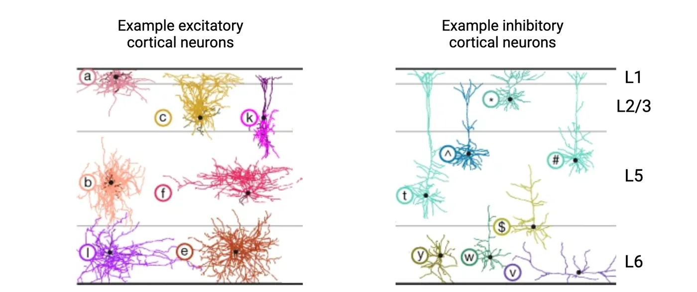
There is still so much to learn about neural signaling
We shouldn’t leave this chapter with the impression that neuroscientists have figured it all out. There is still so much about neural signaling that we don’t know, and there is still tremendous promise for applying the bits we do know to improve our lives. So, let’s end this chapter by highlighting just a few of the many mysteries still to be resolved. That way we can close inspired by the possibility of helping to solve these mysteries, and with dreams of the better world we might build with that knowledge.
- How do neuronal circuits maintain their function despite changing circumstances? Most humans learn to walk early in life, at about 1 year of age. By adulthood, however, you are about twice as tall as when you learned to walk. That means the walking circuits in your spine have had to adapt throughout your lifetime. As you grew, the axons and dendrites in your walking circuits had to be extended over longer and longer distances. As your mass and center of gravity changed, inputs and outputs had to be adjusted to adapt the muscle commands for walking. Through it all, you experienced no major disruptions: you just kept on being able to walk! This is just one example of homeostasis in neural circuits: their ability to maintain the same function despite tremendous change (Marder and Goaillard, 2006). We don’t fully understand how this works (does each neuron have an ‘ideal’ level of activity it is striving for?) or why some changes are easy for a neural circuit to cope with while others cause dysfunction.
- How do neuronal circuits self-organize? Each of your neurons carries your entire genome, about 6.4 billion base-pairs of DNA. That’s an impressive amount of DNA, but it is simply not enough DNA to provide a complete wiring diagram for each of the 86 billion neurons in your brain. And yet, most human brains end up with striking and recognizable similarities in organization, with axons of sensory neurons finding their way to the thalamus, axons of the primary motor cortex descending down to the lumbar spine, etc. How does the human brain self-assemble? And is the assembly program fixed or does it incorporate feedback from the developmental environment? Introduction discusses in more depth what we know and don’t know about the self-organization of neural circuits.
- How many types of neurons are in the human brain? Neuroscientists have long sought to create a classification system for neurons: to develop a complete list of the different types of neurons in the human brain (Bakken et al., 2021). While some differences seem clear (compare some of the different neuronal shapes in Diversity of neurons), it has proven remarkably difficult to come up with a clear and consistent classification system. Molecular analysis has shown that two neurons that look alike might express markedly different channels and transmitters. Meanwhile, neurons that look different can serve very similar functions. As an added layer of complication, neurons are constantly adapting to new circumstances, so what seems like one type of neuron might adapt over time in ways that make it very difficult to classify. Maybe we’re not thinking about neuron identity correctly? Or maybe we just need to crunch more data to see the patterns? Or, perhaps, neurons are so adaptable that detailed typologies aren’t possible. This is a sobering gap in our knowledge: despite all we do know about the human brain we still don’t have a master parts list! There really is so much more to learn.
Summary
Neuroscientists have developed a rich and detailed understanding of neural signaling that is helping us better understand and treat disorders of the nervous system. While this progress is encouraging, there is a daunting level of complexity to nervous system function and many important mysteries left to unravel.
Key terms
Autoimmune disorder, Autoreceptors, Backpropagate, Flaccid paralysis, Homeostasis, Retrograde messengers, Spastic paralysisReferences
Allen, N.J., & Lyons, D.A. (2018). Glia as architects of central nervous system formation and function. Science, 362(6411), 181–185. https://doi.org/10.1126/science.aat0473
Bakken, T.E., Jorstad, N.L., Hu, Q., Lake, B.B., Kalmbach, B.E., Crow, M., Hodge, R.D., Krienen, F.M., Sorensen, S.A., Eggermont, J., Yao, Z., Aevermann, B.D., Aldridge, A.I., Bartlett, A., Bertagnolli, D., Casper, T., Castanon, R.G., Crichton, K., Dalley, R., ... Lein, E.S. (2021). Comparative cellular analysis of motor cortex in human, marmoset and mouse. Nature, 598 111–119. https://doi.org/10.1038/s41586-021-03465-8
Hirose, S. (2014). Mutant GABAA receptor subunits in genetic (idiopathic) epilepsy. Progress in Brain Research, 213, 55–85. https://doi.org/10.1016/B978-0-444-63326-2.00003-X
Marder, E., & Goaillard, J.-M. (2006). Variability, compensation and homeostasis in neuron and network function. Nature Reviews. Neuroscience, 7(7), 563–574. https://doi.org/10.1038/nrn1949
Miura, D.S., & Rosen, M.R. (1978). The effects of ouabain on the transmembrane potentials and intracellular potassium activity of canine cardiac Purkinje fibers. Circulation Research, 42(3), 333–338. https://doi.org/10.1161/01.RES.42.3.333
Noguchi, T., & Arakawa, O. (2008). Tetrodotoxin – distribution and accumulation in aquatic organisms, and cases of human intoxication. Marine Drugs, 6(2), 220–242. https://doi.org/10.3390/md20080011
Stuart, G., Spruston, N., Sakmann, B., & Häusser, M. (1997). Action potential initiation and backpropagation in neurons of the mammalian CNS. Trends in Neurosciences, 20(3), 125–131. https://doi.org/10.1016/S0166-2236(96)10075-8
Adapted from Introduction to Behavioral Neuroscience by OpenStax, licensed under CC BY-NC-SA 4.0. Access for free at openstax.org. Changes: set in this site’s own pages and type, the images recompressed, the interactive exercises and videos linked rather than carried. This adaptation is offered under the same licence.